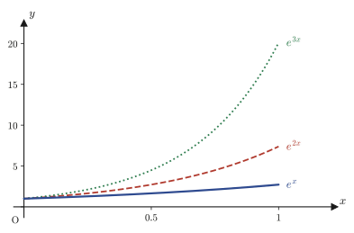
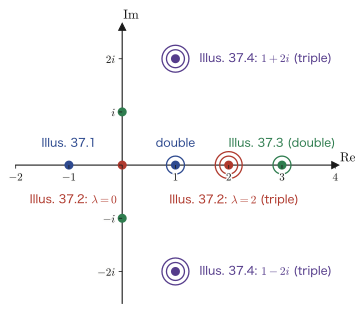
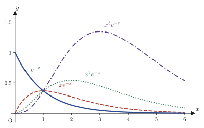

Chapter 37Higher-Order Linear Differential Equations
In Chapters 35 and 36 we treated the second-order linear differential equation $y''+P_1(x)y'+P_2(x)y=R(x)$. An oscillating system with “one degree of freedom,” such as one spring with one mass, is described exactly by this second-order equation. Real systems, however, usually have many more degrees of freedom. The equation for a spring system in which three masses are linked together, or for the deflection of a single long, slender beam, is of fourth order. The rate equations of chemical reactions that proceed through many chained steps, and feedback systems in control engineering, also often lead to linear differential equations of third order, fourth order, or higher. In this chapter we generalize all of the ideas we learned for equations up to second order—the relation between homogeneous and nonhomogeneous equations, fundamental solutions, the characteristic equation, and the Euler equation—to equations of $n$th order (where $n$ is any integer at least 3).
To state the conclusion first, even for order $n$ the machinery hardly changes. The structure “general solution = general solution of the homogeneous equation + a particular solution of the nonhomogeneous equation,” the fact that “a linear combination of $n$ linearly independent solutions (fundamental solutions) is the general solution of the homogeneous equation,” and the method for solving constant-coefficient equations, “substitute $y=e^{\lambda x}$ to form the characteristic equation,” all remain valid as they are, in exactly the same form as in the second-order case. All that changes is that the number of constants that appear grows from two to $n$, and that the degree of the characteristic equation grows from two to $n$. However, an equation of degree $n$ cannot be solved as easily as a quadratic equation, so in this chapter we examine carefully, building up concrete examples, the case in which the characteristic equation has a repeated root (the reason why, for a root of multiplicity $k$, the fundamental solutions grow as $e^{\lambda x},xe^{\lambda x},\ldots,x^{k-1}e^{\lambda x}$), and at the end we prove that reason completely for general $n$ and general multiplicity $k$.
In this part of Yasuhide Mochizuki's “Mathematics Notes: Ordinary Differential Equations,” the source of this chapter, there are two places where a proof breaks off while still unfinished (the mathematical induction in Section 37.1 and the proof of the repeated-root theorem in Section 37.6). This is by no means a defect of the original notes. Rather, it is a valuable part that records the very process of building mathematics with one's own hands: “the line of the proof is visible, but one more step of ingenuity is needed to write it out to the end.” In this chapter we take over the account in the original notes just as it stands, and then complete the interrupted proofs to the end. In the text, we make explicit how far the content of the original notes extends and from where on the completion is supplied by this book.
- A necessary and sufficient condition for an $n$th-order linear differential equation to be an exact differential equation (an equation that can formally be integrated once), and how to construct the first integral in that case (a recurrence relation for the coefficients $Q_k$)
- A proof that the structure “general solution of ① = general solution of ② + a particular solution of ①” holds unchanged for order $n$; expressing the general solution as a linear combination of $n$ linearly independent solutions (fundamental solutions); and the general $n\times n$ Wronskian
- How to solve the constant-coefficient $n$th-order homogeneous equation $y^{(n)}+a_1y^{(n-1)}+\cdots+a_ny=0$ with $y=e^{\lambda x}$, and the characteristic equation $\lambda^n+a_1\lambda^{n-1}+\cdots+a_n=0$
- Observing, through four concrete examples (degrees 3–6; real and complex roots), the fundamental solutions $e^{\lambda_0x},xe^{\lambda_0x},\ldots,x^{k-1}e^{\lambda_0x}$ when the characteristic equation has a repeated root
- Two methods for solving the higher-order Euler equation $x^ny^{(n)}+a_1x^{n-1}y^{(n-1)}+\cdots+a_ny=0$ (substituting $y=x^\lambda$, and substituting $x=e^t$ to reduce it to a constant-coefficient equation)
- Reflections on the meaning of variation of parameters (a parallel translation from the vector space of solutions of the homogeneous equation to the vector space of solutions of the nonhomogeneous equation), and a complete summary of the solution methods learned in this chapter
- A general proof of the repeated-root theorem “the fundamental solutions for a root $\lambda_0$ of multiplicity $k$ of the characteristic equation are $e^{\lambda_0x},xe^{\lambda_0x},\ldots,x^{k-1}e^{\lambda_0x}$” (completing the proof that was interrupted in the original notes)
Source notes: Yasuhide Mochizuki, Mathematics Notes: Ordinary Differential Equations, pp. 33–44.
37.1 Higher-Order Exact Differential Equations
In Chapter 34, a first-order differential equation $P(x,y)\dd x+Q(x,y)\dd y=0$ was called an “exact differential equation” when its left-hand side coincides exactly with the total differential $\dd F$ of some function $F(x,y)$. Let us recast this idea for $n$th-order linear differential equations. In a linear equation the unknown function is just a function $y(x)$ of one variable, so the condition “it is a total differential” is replaced by the condition “a single integration with respect to $x$ ($\int(\cdot)\dd x$) lowers the order by exactly one.”
Definition 37.1: Higher-order exact differential equation (linear exact differential equation)
When an $n$th-order nonhomogeneous linear differential equation
\begin{equation} P_0(x)\,y^{(n)}+P_1(x)\,y^{(n-1)}+\cdots+P_{n-1}(x)\,y'+P_n(x)\,y=R(x) \label{eq:37-general-ode} \end{equation}(where $P_0,P_1,\ldots,P_n$ are functions of $x$, and $P_0$ is assumed not to be identically $0$) can be written, using some expression of order at most $n-1$
$$ Q_0(x)\,y^{(n-1)}+Q_1(x)\,y^{(n-2)}+\cdots+Q_{n-2}(x)\,y'+Q_{n-1}(x)\,y $$as the identity
$$ \frac{\dd}{\dd x}\Big[\,Q_0y^{(n-1)}+Q_1y^{(n-2)}+\cdots+Q_{n-1}y\,\Big]=P_0y^{(n)}+P_1y^{(n-1)}+\cdots+P_ny $$(for all $n$ times differentiable functions $y$), this equation is called an exact differential equation. In this case the equation itself can be rewritten as
$$ \frac{\dd}{\dd x}\Big[\,Q_0y^{(n-1)}+\cdots+Q_{n-1}y\,\Big]=R(x) $$so by integrating both sides just once, we can lower the order by one, down to the equation of order $n-1$, $Q_0y^{(n-1)}+\cdots+Q_{n-1}y=\int R\dd x+C$. This is called the first integral.
Why does considering the “recurrence relation for $Q_k$” work?
Since being handed $Q_0,\ldots,Q_{n-1}$ out of the blue gives us no real feel for them, let us first think about “how to go looking for them.” Using the product rule for derivatives (the $n=1$ case of Leibniz's rule) $\dfrac{\dd}{\dd x}(fg)=f'g+fg'$, we get
$$ \frac{\dd}{\dd x}\Big[\,Q_0y^{(n-1)}+Q_1y^{(n-2)}+\cdots+Q_{n-1}y\,\Big] =\big(Q_0y^{(n)}\big)+\big(Q_0'y^{(n-1)}+Q_1y^{(n-1)}\big)+\big(Q_1'y^{(n-2)}+Q_2y^{(n-2)}\big)+\cdots+\big(Q_{n-2}'y'+Q_{n-1}y'\big)+Q_{n-1}'y $$(Differentiating $Q_ky^{(n-1-k)}$ splits it, by the product rule, into the two terms $Q_k'y^{(n-1-k)}+Q_ky^{(n-k)}$. Note that among these the term $Q_ky^{(n-k)}$ differs in order from the term $Q_{k+1}'y^{(n-2-k)}$ that appears when the next term $Q_{k+1}y^{(n-2-k)}$ is differentiated, and we gather together the terms containing $y^{(j)}$ of the same order.) Picking out only the coefficient of $y^{(n-j)}$ ($j=0,1,\ldots,n-1$): the coefficient of $y^{(n)}$ is $Q_0$, the coefficient of $y^{(n-j)}$ ($1\le j\le n-1$) is $Q_{j-1}'+Q_j$, and finally, as the coefficient of $y$ itself, $Q_{n-1}'$ is left over (this is a remnant of differentiating the “fictitious $Q_n y^{(-1)}$” that lies one step further on, and in fact it is an extra term that corresponds to no $y^{(j)}$).
Comparing the coefficients with $P_0y^{(n)}+P_1y^{(n-1)}+\cdots+P_ny$, we obtain
$$ P_0=Q_0,\qquad P_j=Q_{j-1}'+Q_j\ \ (j=1,\ldots,n-1),\qquad P_n=Q_{n-1}' $$Solving the first two relations for $Q_j$ gives the recurrence relation $Q_0=P_0$, $Q_j=P_j-Q_{j-1}'$ ($j=1,\ldots,n-1$), and this determines all of $Q_0,\ldots,Q_{n-1}$ uniquely from $P_0,\ldots,P_{n-1}$. Before the abstract discussion goes on, let us pause here and check the smallest case, $n=2$, concretely. For example, in the case $P_0=x,\ P_1=2,\ P_2=0$ (the left-hand side of the equation $xy''+2y'=6x$ treated later in Example 37.1), the recurrence above gives $Q_0=P_0=x,\ Q_1=P_1-Q_0'=2-1=1$, and indeed $\dfrac{\dd}{\dd x}(Q_0y'+Q_1y)=\dfrac{\dd}{\dd x}(xy'+y)=xy''+y'+y'=xy''+2y'$ (we used the product rule $\dfrac{\dd}{\dd x}(xy)=xy'+y$ just once), which coincides exactly with the original left-hand side $xy''+2y'$. In other words, as long as $Q_0,Q_1$ are found correctly, the whole left-hand side can be rewritten in the form of a quantity “differentiated only $1$ time.” For general $n$ as well, the same recurrence determines $Q_0,\ldots,Q_{n-1}$ mechanically. The problem is the last relation $P_n=Q_{n-1}'$. Since $Q_{n-1}$ has already been determined solely by $P_0,\ldots,P_{n-1}$, whether $P_n=Q_{n-1}'$ holds depends on whether $P_n$ happens to be “conveniently” arranged. So let us extend the same recurrence by just one more step:
$$ Q_n:=P_n-Q_{n-1}' $$If we simply define it in this way, the last relation becomes nothing other than the condition “$Q_n=0$” itself. In other words, the condition for the original equation to be an exact differential equation is that $Q_n=0$ when the recurrence $Q_0=P_0,\ Q_k=P_k-Q_{k-1}'\ (k=1,\ldots,n)$ is computed all the way to the end (up to $k=n$). This is the content of Theorem 37.1.
Theorem 37.1: Necessary and sufficient condition for an equation to be exact
Define $Q_0,Q_1,\ldots,Q_n$ successively by $Q_0=P_0$, $Q_k=P_k-Q_{k-1}'$ ($k=1,2,\ldots,n$). Then a necessary and sufficient condition for the original equation to be an exact differential equation is that
\begin{equation} Q_n=P_n-P_{n-1}'+P_{n-2}''-\cdots+(-1)^nP_0^{(n)}=0 \qquad\cdots① \label{eq:37-exact-cond} \end{equation}holds. Also, expanding $Q_k$ gives the form $Q_k=P_k-P_{k-1}'+P_{k-2}''-\cdots+(-1)^kP_0^{(k)}$ ($k=0,1,\ldots,n$; the sign flips with each successive term). When the equation is exact, we have the relation
\begin{equation} Q_0y^{(n-1)}+Q_1y^{(n-2)}+\cdots+Q_{n-2}y'+Q_{n-1}y=\int R(x)\,\dd x+C\qquad(C:\text{constant of integration}) \label{eq:37-first-integral} \end{equation}as its first integral.
Caution: $P_0,P_1,\ldots,P_n$ are functions
As also noted in the margin of the original notes, $P_0,\ldots,P_n$ and $Q_0,\ldots,Q_n$ in the equations so far are, unless otherwise stated, in general functions of $x$, and are not necessarily constants. $Q_k'$ means “the function $Q_k$ differentiated with respect to $x$,” and is not $Q_k$ multiplied by the constant $k$, so be careful not to confuse the two.
Now let us prove Theorem 37.1. The original notes try to show it by mathematical induction; the case $n=1$ is written out completely, but the step from general $n=k$ to $n=k+1$ breaks off after the single line “When $n=k$,” and the continuation is not written. Below, we first reproduce the case $n=1$ exactly as written in the original notes, and then complete the proof for general $n$ by carrying out the same integration-by-parts idea all at once.
Proof (Part 1: the case $n=1$, exactly as written in the original notes)
When $n=1$, the original equation is $P_0y'+P_1y=R(x)$. Integrate both sides with respect to $x$.
$$ \int P_0y'\,\dd x+\int P_1y\,\dd x=\int R(x)\,\dd x+C $$Applying the integration by parts formula $\displaystyle\int fg'\dd x=fg-\int f'g\dd x$ to the first term, with the roles $f=P_0,\ g=y$, we get $\displaystyle\int P_0y'\dd x=P_0y-\int P_0'y\dd x$. Substituting this gives
$$ P_0y-\int P_0'y\,\dd x+\int P_1y\,\dd x=\int R(x)\,\dd x+C $$Combining the two integrals on the left-hand side, we have $-\displaystyle\int P_0'y\dd x+\int P_1y\dd x=\int(P_1-P_0')y\dd x$. Therefore we obtain
$$ P_0y+\int(P_1-P_0')y\,\dd x=\int R(x)\,\dd x+C $$If $P_1-P_0'=0$, the integral term on the left-hand side vanishes and we get $P_0y=\int R(x)\dd x+C$, which is an algebraic expression that can be solved directly for $y$ (an expression containing no integral of $y$). Conversely, if $P_1-P_0'\neq0$, the integral $\int(P_1-P_0')y\dd x$ containing $y$ remains on the left-hand side, and in general this cannot be computed in elementary terms, so the property of an exact differential equation, “the order drops immediately after one integration,” is not satisfied. Hence $P_1-P_0'=0$, that is, $Q_1=P_1-Q_0'=0$ ($Q_0=P_0$), is a necessary and sufficient condition for the equation to be exact. In this case the first integral becomes $Q_0y=P_0y=\int R\dd x+C$, which agrees with the general formula for the first integral when $n=1$. ∎ (the case $n=1$)
Proof (Part 2: the case of general $n$. Completion of the part left unfinished in the original notes)
For general $n$ as well, what we are doing is an operation that repeats the integration by parts of the case $n=1$, exactly one stage at a time. So let us carry out the proof of the case $n=1$ for $n$ repetitions all at once. Starting from the highest-order term, we perform integration by parts on both sides of the original equation $n$ times, each time “moving the extra derivative.” Concretely, first focus on the first term $P_0y^{(n)}$ and rewrite it as $\dfrac{\dd}{\dd x}\big[P_0y^{(n-1)}\big]-P_0'y^{(n-1)}$ (one can see that this is correct by checking the right-hand side with the product rule: $\dfrac{\dd}{\dd x}[P_0y^{(n-1)}]=P_0'y^{(n-1)}+P_0y^{(n)}$, and we have merely rearranged this into the form $P_0y^{(n)}=\cdots$). Then
$$ P_0y^{(n)}+P_1y^{(n-1)}+\cdots+P_ny=\frac{\dd}{\dd x}\big[Q_0y^{(n-1)}\big]+(P_1-Q_0')y^{(n-1)}+P_2y^{(n-2)}+\cdots+P_ny $$(We put $Q_0=P_0$. The first term has changed into the form of an exact derivative, and in exchange only the coefficient of the second term has changed from $P_1$ to $P_1-Q_0'=:Q_1$; the remaining terms are unchanged.)
Next, to the newly created second term $Q_1y^{(n-1)}$ we apply exactly the same operation, namely $Q_1y^{(n-1)}=\dfrac{\dd}{\dd x}[Q_1y^{(n-2)}]-Q_1'y^{(n-2)}$. Then
$$ =\frac{\dd}{\dd x}\big[Q_0y^{(n-1)}+Q_1y^{(n-2)}\big]+(P_2-Q_1')y^{(n-2)}+P_3y^{(n-3)}+\cdots+P_ny $$and the coefficient of the third term changes to $P_2-Q_1'=:Q_2$. If we repeat this operation, “absorb a term into the exact-derivative form, and then update the coefficient of the next term,” exactly $n$ times in all (in the $k$th operation we use $Q_{k-1}y^{(n-k)}=\frac{\dd}{\dd x}[Q_{k-1}y^{(n-k-1)}]-Q_{k-1}'y^{(n-k-1)}$ and update the coefficient of the term containing the derivative of order $n-k$ to $Q_k:=P_k-Q_{k-1}'$), then in the end all the derivative terms have been absorbed into the exact-derivative form, and only the coefficient of the term in $y$ itself has been updated and remains:
$$ P_0y^{(n)}+P_1y^{(n-1)}+\cdots+P_ny=\frac{\dd}{\dd x}\Big[\,Q_0y^{(n-1)}+Q_1y^{(n-2)}+\cdots+Q_{n-1}y\,\Big]+Q_ny $$Here $Q_0,\ldots,Q_n$ are exactly the functions determined by the recurrence stated in Theorem 37.1, $Q_0=P_0,\ Q_k=P_k-Q_{k-1}'\ (k=1,\ldots,n)$. This equality is an identity that holds for any ($n$ times differentiable) function $y$ (indeed, the computation so far has not used the concrete form of $y$ at all, and has been obtained only by applying the product rule and rearranging terms).
Now, the original equation says that the left-hand side of this identity is equal to $R(x)$, and therefore
$$ \frac{\dd}{\dd x}\Big[\,Q_0y^{(n-1)}+\cdots+Q_{n-1}y\,\Big]=R(x)-Q_ny $$holds. As long as the term $-Q_ny$ containing $y$ remains on the right-hand side, this is not in the form “just integrate once” (the right-hand side is not a known function of $x$ alone, but contains the unknown function $y$). Hence the necessary and sufficient condition for the original equation to be an exact differential equation is precisely that this extra term vanish, that is, $Q_n=0$ in Eq. ①. And when $Q_n=0$, the equation becomes $\dfrac{\dd}{\dd x}\big[Q_0y^{(n-1)}+\cdots+Q_{n-1}y\big]=R(x)$, and integrating both sides with respect to $x$ immediately gives the general formula for the first integral. ∎
This proof merely applies the integration by parts of the case $n=1$ in the original notes ($\int P_0y'\dd x=P_0y-\int P_0'y\dd x$) once to each of the $n$ terms, $n$ times in total. When one carries out the mathematical induction that the original notes were aiming at—“if it holds for $n=k$, then it holds for $n=k+1$ as well”—this very same single step of “adding one more integration by parts” is exactly the content of the inductive step. For this reason, instead of stacking up the stages of the induction one by one, we completed the proof here by carrying out the $n$ integrations by parts all at once from the start.
Example 37.1: Solving a second-order exact differential equation
Verify that $x\,y''+2y'=6x$ is an exact differential equation, and find its general solution.
Solution. This equation is of second order ($n=2$), with $P_0=x,\ P_1=2,\ P_2=0$. The condition ① of Theorem 37.1 (in the case $n=2$) is $Q_2=P_2-P_1'+P_0''=0-0+0=0$, and it indeed holds. Therefore this equation is an exact differential equation.
We find the coefficients of the first integral from the recurrence. We have $Q_0=P_0=x$ and $Q_1=P_1-Q_0'=2-1=1$. Hence, by the general formula for the first integral, we obtain the first integral
$$ Q_0y'+Q_1y=xy'+y=\int 6x\,\dd x+C_1=3x^2+C_1 $$Here the left-hand side $xy'+y$ is nothing other than the product rule itself, $\dfrac{\dd}{\dd x}(xy)=xy'+y$ (this is a concrete example of the fact that the form $Q_0y'+Q_1y$ “is exactly the derivative of a single product”). Therefore
$$ \frac{\dd}{\dd x}(xy)=3x^2+C_1 $$and integrating once more with respect to $x$ gives
$$ xy=x^3+C_1x+C_2 $$that is, the function
$$ y=x^2+C_1+\frac{C_2}{x} $$is the general solution. To verify, we substitute $y=x^2+C_1+C_2/x$ back into the original equation: since $y'=2x-C_2/x^2$ and $y''=2+2C_2/x^3$, we have
$$ xy''+2y'=x\Big(2+\frac{2C_2}{x^3}\Big)+2\Big(2x-\frac{C_2}{x^2}\Big)=2x+\frac{2C_2}{x^2}+4x-\frac{2C_2}{x^2}=6x $$so the original equation is always satisfied regardless of the values of $C_1,C_2$ (we have confirmed that SymPy's dsolve also yields the same general solution $y=C_1+C_2/x+x^2$).
37.2 Structure of Solutions of Higher-Order Linear Differential Equations
In Section 37.1 we saw how, in the special case where an $n$th-order nonhomogeneous equation is an “exact differential equation,” a single integration lowers the order by one. In general, however, the coefficients $P_0,\ldots,P_n$ do not necessarily satisfy condition ① ($Q_n=0$), so the method of exact differential equations alone cannot solve the great majority of higher-order equations. In this section, therefore, we set aside the question of “whether the equation is exact” and examine the structure of the set of solutions that the $n$th-order linear differential equation itself possesses. To state the conclusion first: the structure we learned for the second-order case in Chapter 35—“the general solution of a nonhomogeneous equation = the general solution of the homogeneous equation + a particular solution of the nonhomogeneous equation,” and “the general solution of a homogeneous equation is a linear combination of fundamental solutions”—holds in exactly the same form for every $n$. The only change is that the number of constants appearing increases from two to $n$.
Following the original notes, let ① denote the $n$th-order nonhomogeneous linear differential equation and ② the corresponding homogeneous equation ($P_1,\ldots,P_n$ are functions of $x$, and $R(x)$ is assumed not to be identically $0$).
\begin{equation} y^{(n)}+P_1(x)y^{(n-1)}+\cdots+P_{n-1}(x)y'+P_n(x)y=R(x)\qquad\cdots① \label{eq:37-2-nonhom} \end{equation} \begin{equation} y^{(n)}+P_1(x)y^{(n-1)}+\cdots+P_{n-1}(x)y'+P_n(x)y=0\qquad\cdots② \label{eq:37-2-hom} \end{equation}Theorem 37.2: Structure of the general solution of a nonhomogeneous equation
Let $y$ be the general solution of ①, let $y_0$ be any one particular solution of ① (a single concrete solution that contains no unknown constants), and let $Y$ be the general solution of ②. Then we always have
$$ y=Y+y_0 $$That is, the general solution of the nonhomogeneous equation ① equals the general solution of the corresponding homogeneous equation ② plus any one particular solution of ①.
Proof (as written in the original notes; exactly the same method as in the second-order case)
Since $y,y_0$ both satisfy ①, let ③ and ④ denote the equations obtained by substituting each of them into ①.
$$ y^{(n)}+P_1(x)y^{(n-1)}+\cdots+P_{n-1}(x)y'+P_n(x)y=R(x)\qquad\cdots③ $$ $$ y_0^{(n)}+P_1(x)y_0^{(n-1)}+\cdots+P_{n-1}(x)y_0'+P_n(x)y_0=R(x)\qquad\cdots④ $$Also, since $Y$ satisfies ②, we have
$$ Y^{(n)}+P_1(x)Y^{(n-1)}+\cdots+P_{n-1}(x)Y'+P_n(x)Y=0\qquad\cdots⑤ $$Now form ③−④ (subtract left-hand side from left-hand side and right-hand side from right-hand side; note that the right-hand side becomes $R(x)-R(x)=0$). Using the linearity of differentiation, $(f-g)^{(k)}=f^{(k)}-g^{(k)}$, and rearranging, we obtain
$$ (y^{(n)}-y_0^{(n)})+P_1(x)(y^{(n-1)}-y_0^{(n-1)})+\cdots+P_{n-1}(x)(y'-y_0')+P_n(x)(y-y_0)=0\qquad\cdots⑥ $$Here ⑥ is nothing but ⑤ with $Y$ replaced throughout by $y-y_0$—that is, ⑥ is precisely the statement that “$y-y_0$ satisfies ②.” If we abbreviate this as “⑤ = ⑥,” it follows that $y-y_0$ is also a solution of ②.
Now, $Y$ is the general solution of ②; that is, by letting the $n$ arbitrary constants $C_1,\ldots,C_n$ vary, it exhausts all the functions that satisfy ② (this is shown next). Since $y-y_0$ is one function satisfying ②, it is of course included in this “all.” Therefore, by choosing $C_1,\ldots,C_n$ suitably we can make $Y=y-y_0$. Hence the relation
$$ y-y_0=Y\qquad\therefore\ y=Y+y_0 $$holds. ∎
What it means to be “contained in $Y$”—the solution-space viewpoint
The last line of the proof above (“since it is contained in $Y$, we can make $Y=y-y_0$”) seems obvious at first glance, but in fact an important property of the set of all solutions of ② is hidden here. Take two solutions $u_1,u_2$ of ② and form the sum of constant multiples $c_1u_1+c_2u_2$ ($c_1,c_2$ are arbitrary constants). By the linearity of differentiation, $c_1u_1+c_2u_2$ also satisfies ② (substitute it into the left-hand side of ②: since $u_1,u_2$ each satisfy ②, every term becomes $c_1\cdot0+c_2\cdot0=0$). In other words, the set of all solutions of ② is closed under addition and under multiplication by constants—it forms what linear algebra calls a vector space (the definition of a vector space is in Chapter 10, Section 10.1). That this vector space equals “the set of all linear combinations of $n$ linearly independent functions $y_1,\ldots,y_n$” is the fact stated next, and this fact is what guarantees that “$y-y_0$ is contained in $Y$.”
Next we describe how to construct the general solution $Y$ of ② concretely. We quote the original notes as written.
The general solution $Y$ of ②, an $n$th-order homogeneous equation, can be expressed as a linear combination of $n$ linearly independent solutions $y_1,y_2,y_3,\ldots,y_{n-1},y_n$, that is, as
$$ Y=C_1y_1+C_2y_2+C_3y_3+\cdots+C_{n-1}y_{n-1}+C_ny_n $$Here $C_1,\ldots,C_n$ are arbitrary constants.
Definition 37.2: Fundamental system of solutions
Suppose that $n$ solutions $y_1,y_2,\ldots,y_n$ of ② are mutually linearly independent (meaning that none of them can be written as a linear combination of the remaining ones). Then $\{y_1,\ldots,y_n\}$ is called a fundamental system of solutions of ② (or simply fundamental solutions). Once one fundamental system of solutions has been found, letting the arbitrary constants $C_1,\ldots,C_n$ range freely in its linear combination $Y=C_1y_1+\cdots+C_ny_n$ exactly exhausts the set of all solutions of ② (the general solution).
But how can we recognize these “$n$ linearly independent solutions” in practice? And why must there be exactly $n$ of them? The tool that answers these two questions, already introduced in the second-order case (Chapter 35, Section 35.2), is the Wronskian. The idea there—to replace the question “are $y_1,\ldots,y_n$ linearly independent?” by the question “is a certain $n\times n$ matrix invertible (does it have an inverse)?” and to decide it by checking that the determinant is nonzero—is the same for every $n$.
Definition 37.3: The Wronskian of $n$ functions
For $n$ functions $y_1,y_2,\ldots,y_n$ that are differentiable $n-1$ times, the following $n\times n$ determinant is called the Wronskian and is written $W(y_1,y_2,\ldots,y_n)$.
$$ W(y_1,y_2,\ldots,y_n)= \begin{vmatrix} y_1 & y_2 & \cdots & y_n \\ y_1' & y_2' & \cdots & y_n' \\ \vdots & \vdots & \ddots & \vdots \\ y_1^{(n-1)} & y_2^{(n-1)} & \cdots & y_n^{(n-1)} \end{vmatrix} $$(In the $j$th column, arrange $y_j$ and its derivatives $y_j',y_j'',\ldots,y_j^{(n-1)}$ from the top in the order of the $0$th derivative, the $1$st derivative, …, and the ($n-1$)th derivative. The number of rows and the number of columns are both $n$.)
Why does a nonzero Wronskian serve as a test for linear independence? (review of the second-order case and its generalization)
Let us extend directly to $n$ functions the argument we saw in Section 35.2 (Chapter 35). Suppose that $y_1,\ldots,y_n$ are solutions of ②, and that the relation $c_1y_1+c_2y_2+\cdots+c_ny_n=0$ (identically $0$ for all $x$) holds with at least one of the constants $c_1,\ldots,c_n$ not equal to $0$ (that is, suppose they are linearly dependent). Differentiating this equation $0,1,\ldots,n-1$ times with respect to $x$ gives the $n$ equations
$$ c_1y_1^{(k)}+c_2y_2^{(k)}+\cdots+c_ny_n^{(k)}=0\qquad(k=0,1,\ldots,n-1) $$If we regard these as a system of linear equations in the $n$ unknowns $(c_1,\ldots,c_n)$, its coefficient matrix is exactly the (transpose of the) matrix of Definition 37.3, and “having a nontrivial solution $(c_1,\ldots,c_n)\neq(0,\ldots,0)$” means that this matrix is not invertible—that is, that the determinant (the Wronskian) is $0$ (for the conditions for invertibility, see Chapter 9, Section 9.6). Taking the contrapositive, if the Wronskian is not $0$ at some point $x_0$, then $y_1,\ldots,y_n$ are linearly independent. Conversely, in the special situation where $y_1,\ldots,y_n$ are solutions of one and the same homogeneous equation ② (note that this converse does not hold for $n$ general, unrelated functions—see Chapter 35, Section 35.3), it is also a theorem that the Wronskian being identically $0$ implies linear dependence (the proof of this theorem uses the uniqueness of the solution of an initial value problem, so it goes beyond the scope of this book. Here we use only the fact that “for $n$ solutions of ②, the condition Wronskian $\neq0$ is equivalent to linear independence”).
Caution: $n$ solutions are necessary, and $n+1$ or more are superfluous
If we gather $n+1$ or more solutions of ②, then the same reasoning that we verified for the case of three functions in Section 35.3 (Chapter 35) shows that the Wronskian becomes identically $0$ (the argument there extends directly to $n+1$ functions), so the solutions cannot be linearly independent. That is, an $n$th-order linear homogeneous equation has at most $n$ linearly independent solutions (exactly this many, and no more). Here lies the reason why a fundamental system of solutions should consist of exactly $n$ solutions.
Now let us confirm the computation of a Wronskian with a concrete example. The following example anticipates a form that will appear again when we treat repeated roots in Section 37.4—the same exponential $e^{\lambda x}$ multiplied by powers of $x$.
Example 37.2: The Wronskian of $e^{2x},\ xe^{2x},\ x^2e^{2x}$
For the three functions $y_1=e^{2x}$, $y_2=xe^{2x}$, $y_3=x^2e^{2x}$, compute the Wronskian $W(y_1,y_2,y_3)$ and verify that they are linearly independent.
Solution. Using the product rule, we differentiate each column in turn.
$$ y_1=e^{2x},\quad y_1'=2e^{2x},\quad y_1''=4e^{2x} $$ $$ y_2=xe^{2x},\quad y_2'=(1+2x)e^{2x},\quad y_2''=(4+4x)e^{2x} $$ $$ y_3=x^2e^{2x},\quad y_3'=(2x+2x^2)e^{2x},\quad y_3''=(2+8x+4x^2)e^{2x} $$($y_2'$ is $\dfrac{\dd}{\dd x}(xe^{2x})=1\cdot e^{2x}+x\cdot2e^{2x}=(1+2x)e^{2x}$. $y_3'$ is $\dfrac{\dd}{\dd x}(x^2e^{2x})=2x\cdot e^{2x}+x^2\cdot2e^{2x}=(2x+2x^2)e^{2x}$. For $y_2'',y_3''$ as well, it suffices to use the product rule once more in the same way.) Using a property of determinants (multiplying a column by a constant multiplies the determinant by that constant), we factor the common factor $e^{2x}$ out of each of the three columns—$e^{2x}\times e^{2x}\times e^{2x}=e^{6x}$—which gives
$$ W(y_1,y_2,y_3)=e^{6x} \begin{vmatrix} 1 & x & x^2 \\ 2 & 1+2x & 2x+2x^2 \\ 4 & 4+4x & 2+8x+4x^2 \end{vmatrix} $$We compute the determinant on the right-hand side by subtracting $2$ times and $4$ times the first row from the second and third rows, respectively (elementary row operations do not change the value of a determinant). Subtracting twice the first row from the second row gives $(2-2\cdot1,\ (1+2x)-2x,\ (2x+2x^2)-2x^2)=(0,1,2x)$. Subtracting four times the first row from the third row gives $(4-4,\ (4+4x)-4x,\ (2+8x+4x^2)-4x^2)=(0,4,2+8x)$. Hence
$$ \begin{vmatrix} 1 & x & x^2 \\ 2 & 1+2x & 2x+2x^2 \\ 4 & 4+4x & 2+8x+4x^2 \end{vmatrix} = \begin{vmatrix} 1 & x & x^2 \\ 0 & 1 & 2x \\ 0 & 4 & 2+8x \end{vmatrix} $$Expanding by cofactors along the first column, we get $1\times\begin{vmatrix}1 & 2x\\ 4 & 2+8x\end{vmatrix}=1\times\big\{(2+8x)-8x\big\}=2$. Therefore we obtain
$$ W(y_1,y_2,y_3)=2e^{6x} $$Since the exponential function never becomes $0$ for any $x$, we have $W(y_1,y_2,y_3)=2e^{6x}\neq0$ (for all $x$). Hence $e^{2x},\ xe^{2x},\ x^2e^{2x}$ are linearly independent (verified with SymPy).
37.3 Solving nth-Order Homogeneous Differential Equations with Constant Coefficients
The general theory we saw in Section 37.2 (the structure of the general solution, linear combinations of fundamental solutions, and the Wronskian) holds whatever functions the coefficients $P_1(x),\ldots,P_n(x)$ are. However, merely knowing it does not let us actually write down $n$ specific fundamental solutions $y_1,\ldots,y_n$—an equation with general function coefficients cannot, in general, be solved in terms of elementary functions. So let us narrow the discussion to exactly the same special case that we restricted ourselves to for the second-order equation in Chapter 35, namely the case in which all the coefficients are constants. Then the very same idea as in the second-order case (try substituting $y=e^{\lambda x}$) is all it takes to find all $n$ fundamental solutions at once.
Following the original notes, we denote the $n$th-order homogeneous linear differential equation with constant coefficients by ① (where $a_1,a_2,\ldots,a_n$ are all real constants).
\begin{equation} y^{(n)}+a_1y^{(n-1)}+a_2y^{(n-2)}+\cdots+a_{n-1}y'+a_ny=0 \qquad\cdots① \label{eq:37-3-const} \end{equation}Derivation of the characteristic equation
Exactly as for the second-order linear homogeneous differential equation (Chapter 35, Section 35.4), let us try taking the following as a candidate for a fundamental solution:
$$ y=e^{\lambda x} \qquad(\lambda:\text{constant}) $$Applying the differentiation formula for the exponential function, $\dfrac{\dd}{\dd x}e^{\lambda x}=\lambda e^{\lambda x}$, repeatedly $k$ times gives $y^{(k)}=\lambda^k e^{\lambda x}$ (for $k=0,1,\ldots,n$; for $k=0$ it does indeed hold, since $y^{(0)}=y=e^{\lambda x}=\lambda^0e^{\lambda x}$). Substituting this as it stands into ①, we get
$$ \lambda^n e^{\lambda x}+a_1\lambda^{n-1}e^{\lambda x}+a_2\lambda^{n-2}e^{\lambda x}+\cdots+a_{n-1}\lambda e^{\lambda x}+a_ne^{\lambda x}=0 $$Every term on the left-hand side has the common factor $e^{\lambda x}$, so factoring it out, we obtain
$$ \big(\lambda^n+a_1\lambda^{n-1}+a_2\lambda^{n-2}+\cdots+a_{n-1}\lambda+a_n\big)\,e^{\lambda x}=0 $$Now the exponential function always satisfies $e^{\lambda x}\neq0$, whether $\lambda$ is real or complex (the exponential function never becomes $0$—confirmed in Chapters 2 and 21), so we may divide both sides by $e^{\lambda x}$. Therefore, a necessary and sufficient condition for $y=e^{\lambda x}$ to be a solution of ① is that $\lambda$ satisfy the following algebraic equation (an equation in $\lambda$ alone, containing no $x$ at all).
\begin{equation} \lambda^n+a_1\lambda^{n-1}+a_2\lambda^{n-2}+\cdots+a_{n-1}\lambda+a_n=0 \qquad\cdots② \label{eq:37-3-charpoly} \end{equation}Formula 37.1: The characteristic equation of an nth-order homogeneous differential equation with constant coefficients
To find the candidates $y=e^{\lambda x}$ for fundamental solutions of ①, it suffices to replace $y^{(k)}$ ($k=0,1,\ldots,n$) in ① by $\lambda^k$ and solve the resulting Eq. ② as an algebraic equation in $\lambda$. This is called the characteristic equation of ①. Since ② is an equation of degree $n$, the fundamental theorem of algebra (the theorem, stated in Chapter 12, that an equation of degree $n$ with complex coefficients has exactly $n$ complex roots, counted with multiplicity) tells us that it has exactly $n$ roots $\lambda_1,\lambda_2,\ldots,\lambda_n$ in the complex numbers (a repeated root is counted with its multiplicity).
Caution: Even if the coefficients $a_k$ are real, the roots $\lambda_k$ can be complex
Even if the coefficients $a_1,\ldots,a_n$ of ② are real, the roots of an equation of degree $n$ are not necessarily real (the same situation as a quadratic equation whose discriminant is negative). However, the complex roots of an algebraic equation with real coefficients always appear in pairs of complex conjugates $\alpha\pm i\beta$ (if $\lambda=\alpha+i\beta$ is a root, then $\overline\lambda=\alpha-i\beta$ is also a root; to see this, take the complex conjugate of both sides of ② and use $\overline{a_k}=a_k$, which holds because the coefficients are real). When complex roots appear, the method of using Euler's formula $e^{i\theta}=\cos\theta+i\sin\theta$ (Chapter 23) to convert them into the real-valued fundamental solutions $e^{\alpha x}\cos(\beta x),\ e^{\alpha x}\sin(\beta x)$ is exactly the same as in the second-order case (Chapter 35, Section 35.5). We will check concrete examples in Illustration 37.3 and Illustration 37.4 of Section 37.4.
Once the $n$ roots $\lambda_1,\ldots,\lambda_n$ of the characteristic equation ② have been found, we obtain the $n$ corresponding functions $e^{\lambda_1x},e^{\lambda_2x},\ldots,e^{\lambda_nx}$ as candidates for solutions of ①. Let us check whether these actually form what Section 37.2 called a fundamental system of solutions (Definition 37.2), that is, whether they are linearly independent. First we consider the case in which $\lambda_1,\ldots,\lambda_n$ are all distinct (the case with repeated roots is treated separately in Sections 37.4 and 37.6).
Why do distinct roots give linearly independent solutions?—The Vandermonde determinant
When $\lambda_1,\ldots,\lambda_n$ are distinct, let us compute the Wronskian (Definition 37.3) of $e^{\lambda_1x},\ldots,e^{\lambda_nx}$. The $j$th column consists of $y_j=e^{\lambda_jx}$ and its derivatives $y_j^{(i)}=\lambda_j^ie^{\lambda_jx}$ ($i=0,\ldots,n-1$), so factoring the common factor $e^{\lambda_jx}$ out of each column (we use the property that multiplying one column of a determinant by a constant multiplies the determinant by the same constant, applying it to all $n$ columns), we obtain
$$ W(e^{\lambda_1x},\ldots,e^{\lambda_nx})=e^{(\lambda_1+\cdots+\lambda_n)x} \begin{vmatrix} 1 & 1 & \cdots & 1\\ \lambda_1 & \lambda_2 & \cdots & \lambda_n\\ \lambda_1^2 & \lambda_2^2 & \cdots & \lambda_n^2\\ \vdots & \vdots & \ddots & \vdots\\ \lambda_1^{n-1} & \lambda_2^{n-1} & \cdots & \lambda_n^{n-1} \end{vmatrix} $$The determinant on the right-hand side is a famous determinant called the Vandermonde determinant, and it is known that in general it collapses into a neat factored form:
$$ \begin{vmatrix} 1 & 1 & \cdots & 1\\ \lambda_1 & \lambda_2 & \cdots & \lambda_n\\ \vdots & \vdots & \ddots & \vdots\\ \lambda_1^{n-1} & \lambda_2^{n-1} & \cdots & \lambda_n^{n-1} \end{vmatrix} =\prod_{1\le i\lt j\le n}(\lambda_j-\lambda_i) $$(This can be shown by mathematical induction on $n$: if we perform the elementary row operation of subtracting the first column from each of the 2nd through $n$th columns, the first row becomes $(1,0,\ldots,0)$, and expanding by cofactors along the first row reduces the problem to a determinant of the same form and one size smaller. For $n=2,3,4$ we computed the determinant directly with SymPy and verified that it agrees with this formula.) For this product $\prod_{i\lt j}(\lambda_j-\lambda_i)$, only when $\lambda_1,\ldots,\lambda_n$ are distinct does none of the factors $\lambda_j-\lambda_i$ ($i\neq j$) become $0$, so the product is not equal to $0$ as a whole. Therefore, the following holds:
$$ W(e^{\lambda_1x},\ldots,e^{\lambda_nx})=e^{(\lambda_1+\cdots+\lambda_n)x}\prod_{1\le i\lt j\le n}(\lambda_j-\lambda_i)\neq0 \qquad(\text{for all }x\text{}) $$This is so because the exponential function $e^{(\lambda_1+\cdots+\lambda_n)x}$ also never becomes $0$. Hence, as long as $\lambda_1,\ldots,\lambda_n$ are distinct, $e^{\lambda_1x},\ldots,e^{\lambda_nx}$ are always linearly independent and form a fundamental system of solutions of ①.
Theorem 37.3: General solution when the characteristic equation has $n$ distinct roots
When the characteristic equation ② of ① has $n$ distinct roots $\lambda_1,\lambda_2,\ldots,\lambda_n$ (not necessarily real), the general solution of ① is
$$ y=C_1e^{\lambda_1x}+C_2e^{\lambda_2x}+\cdots+C_{n-1}e^{\lambda_{n-1}x}+C_ne^{\lambda_nx} $$where $C_1,\ldots,C_n$ are arbitrary constants. When a pair of complex roots $\alpha\pm i\beta$ appears, the corresponding two terms $C e^{(\alpha+i\beta)x}+\overline{C}e^{(\alpha-i\beta)x}$ may be rewritten as a linear combination of the real-valued pair of fundamental solutions $e^{\alpha x}\cos(\beta x),\ e^{\alpha x}\sin(\beta x)$ (for the same reason as in the second-order case).

Example 37.3: A third-order homogeneous equation with three distinct real roots
Find the general solution of the differential equation $y'''-6y''+11y'-6y=0$.
Solution. Setting $y=e^{\lambda x}$, we form the characteristic equation (Formula 37.1).
$$ \lambda^3-6\lambda^2+11\lambda-6=0 $$Substituting $\lambda=1$ into the left-hand side gives $1-6+11-6=0$, so $\lambda=1$ is one of the roots, and $\lambda-1$ is a factor (the factor theorem, covered in high school mathematics). Actually carrying out the division, we get
$$ \lambda^3-6\lambda^2+11\lambda-6=(\lambda-1)(\lambda^2-5\lambda+6)=(\lambda-1)(\lambda-2)(\lambda-3) $$(We factored $\lambda^2-5\lambda+6$ as $(\lambda-2)(\lambda-3)$ by finding the two numbers $2,3$ whose sum is $5$ and whose product is $6$.) Therefore the roots of the characteristic equation are $\lambda=1,2,3$, three distinct real numbers. By Theorem 37.3, the general solution is
$$ y=C_1e^x+C_2e^{2x}+C_3e^{3x} $$To check this, we substitute $y'=C_1e^x+2C_2e^{2x}+3C_3e^{3x}$, $y''=C_1e^x+4C_2e^{2x}+9C_3e^{3x}$, and $y'''=C_1e^x+8C_2e^{2x}+27C_3e^{3x}$ into the original equation. The coefficient of $e^x$ is $1-6+11-6=0$, that of $e^{2x}$ is $8-24+22-6=0$, and that of $e^{3x}$ is $27-54+33-6=0$, so the left-hand side indeed becomes identically $0$ (verified with SymPy). Figure 37.1 shows the graphs of these three fundamental solutions—one can see at a glance that the larger $\lambda$ is, the faster the function grows.
37.4 Fundamental Solutions When the Characteristic Equation Has a Repeated Root
In Section 37.3 we treated the case where the $n$ roots $\lambda_1,\ldots,\lambda_n$ of the characteristic equation ② are all distinct. But ② is an ordinary algebraic equation of degree $n$, so, exactly as a quadratic equation can have a repeated root (discriminant $D=0$), ② may have repeated roots too. What does the general solution look like when ② has a root $\lambda_0$ of multiplicity $k$? To anticipate the conclusion: the single fundamental solution $e^{\lambda_0x}$ of Section 37.3 is not enough, and the functions obtained by multiplying by powers of $x$, namely $xe^{\lambda_0x},\ x^2e^{\lambda_0x},\ldots$, are needed one after another as fundamental solutions (this is a direct generalization of the second-order case, in which a repeated root $\Rightarrow$ fundamental solutions $e^{\lambda_0x},xe^{\lambda_0x}$—Chapter 35, Section 35.4). Following the original notes, we first observe the pattern in four concrete examples ((i)–(iv)), and then summarize the general law. The proof of the general law will be completed in Section 37.6.
Illustration 37.1: (i) A cubic equation with a double real root
Find the general solution of $y'''-y''-y'+y=0$.
Solution. The characteristic equation is $\lambda^3-\lambda^2-\lambda+1=0$. It factors as $\lambda^2(\lambda-1)-(\lambda-1)=(\lambda-1)(\lambda^2-1)=(\lambda-1)(\lambda-1)(\lambda+1)$ (we split it into $\lambda^3-\lambda^2$ and $-\lambda+1$ and factored out the common factor $(\lambda-1)$), so
$$ \lambda^3-\lambda^2-\lambda+1=(\lambda+1)(\lambda-1)^2=0 $$Hence $\lambda=-1$ (a simple root) and $\lambda=1$ (a double root). As usual, the simple root $\lambda=-1$ yields one fundamental solution, $e^{-x}$. For the double root $\lambda=1$, by the same reasoning as in the repeated-root case for second-order equations (Theorem 35.4), we get not just the one fundamental solution $e^{x}$ but two, $e^x,\ xe^x$ (the reason is proved rigorously in Section 37.6; here, following the original notes, we accept it as a fact and use it). Therefore the fundamental solutions are the three functions $e^{-x},\ e^x,\ xe^x$ (exactly matching the order, 3, of the equation), and the general solution is
$$ y=C_1e^{-x}+(C_2+C_3x)e^x $$As a check, substitute $y=xe^x$ directly. From $y'=(1+x)e^x,\ y''=(2+x)e^x,\ y'''=(3+x)e^x$, in $y'''-y''-y'+y=(3+x)-(2+x)-(1+x)+x$ the part remaining after factoring out $e^x$ has constant term $3-2-1+0=0$, and the coefficient of $x$ is $1-1-1+1=0$, so the result is indeed $0$ (verified with SymPy).
Illustration 37.2: (ii) A quartic equation with a triple real root
Find the general solution of $y''''-6y'''+12y''-8y'=0$.
Solution. The characteristic equation is $\lambda^4-6\lambda^3+12\lambda^2-8\lambda=0$. The left side has the common factor $\lambda$, so we first factor out $\lambda$.
$$ \lambda(\lambda^3-6\lambda^2+12\lambda-8)=0 $$The expression in parentheses coincides exactly with $(\lambda-2)^3=\lambda^3-3\cdot\lambda^2\cdot2+3\cdot\lambda\cdot2^2-2^3=\lambda^3-6\lambda^2+12\lambda-8$ (the binomial expansion formula, covered in high school), so
$$ \lambda(\lambda-2)^3=0 $$Hence $\lambda=0$ (a simple root) and $\lambda=2$ (a triple root). The simple root $\lambda=0$ yields one fundamental solution, $e^{0\cdot x}=1$ (a constant function). For the triple root $\lambda=2$, we extend the pattern $e^{\lambda_0x},xe^{\lambda_0x}$ for a double root by one more step, and the three functions $e^{2x},\ xe^{2x},\ x^2e^{2x}$ become fundamental solutions. In total there are $1+3=4$ of them, exactly matching the order, 4, of the equation, and the general solution is
$$ y=C_1+(C_2+C_3x+C_4x^2)e^{2x} $$(substituting each of $y=1,\ xe^{2x},\ x^2e^{2x}$ into the original equation gives $0$; verified with SymPy).
Illustration 37.3: (iii) A quartic equation with a double real root and simple complex roots
Find the general solution of $y''''-6y'''+10y''-6y'+9y=0$.
Solution. The characteristic equation is $\lambda^4-6\lambda^3+10\lambda^2-6\lambda+9=0$. This factors as
$$ (\lambda-3)^2(\lambda^2+1)=(\lambda^2-6\lambda+9)(\lambda^2+1)=\lambda^4+\lambda^2-6\lambda^3-6\lambda+9\lambda^2+9=\lambda^4-6\lambda^3+10\lambda^2-6\lambda+9 $$(we checked the right-hand side by actually expanding the left-hand side). Therefore $\lambda=3$ (a double root) and $\lambda=\pm i$ (a pair of simple complex roots). For $\lambda=\pm i$, we use Euler's formula $e^{i\theta}=\cos\theta+i\sin\theta$ (Chapter 23) to convert the complex-valued fundamental solutions $e^{ix},e^{-ix}$ into real-valued ones—by exactly the same computation as in the second-order case (Chapter 35, Section 35.5): from $\cos x=\dfrac{e^{ix}+e^{-ix}}2,\ \sin x=\dfrac{e^{ix}-e^{-ix}}{2i}$ we obtain the real-valued fundamental solutions $\cos x,\ \sin x$. The root $\lambda=3$ (a double root) yields the two functions $e^{3x},\ xe^{3x}$. In total there are $2+2=4$ of them, matching the order, 4, and the general solution is
$$ y=C_1\cos x+C_2\sin x+(C_3+C_4x)e^{3x} $$(substituting each of the four fundamental solutions into the original equation gives $0$; verified with SymPy).
Illustration 37.4: (iv) A sixth-degree equation with a triple complex root
Find the general solution of $y^{(6)}-6y^{(5)}+27y''''-68y'''+135y''-150y'+125y=0$.
Solution. The characteristic equation is $\lambda^6-6\lambda^5+27\lambda^4-68\lambda^3+135\lambda^2-150\lambda+125=0$, which factors as
$$ (\lambda^2-2\lambda+5)^3=0 $$Solving $\lambda^2-2\lambda+5=0$ gives $\lambda=\dfrac{2\pm\sqrt{4-20}}2=\dfrac{2\pm4i}2=1\pm2i$, so $\lambda=1\pm2i$ are triple roots (there are no real roots). In Illustrations 37.1–37.3 we saw the rule “a real root $\lambda_0$ of multiplicity $k$ yields $e^{\lambda_0x},xe^{\lambda_0x},\ldots,x^{k-1}e^{\lambda_0x}$”; here we consider the case where that $\lambda_0$ is the complex number $1+2i$ (together with its conjugate $1-2i$). Applying the same rule directly to the complex root $\lambda_0=1+2i$, we obtain the six complex-valued fundamental solutions
$$ e^{(1+2i)x},\ xe^{(1+2i)x},\ x^2e^{(1+2i)x},\qquad e^{(1-2i)x},\ xe^{(1-2i)x},\ x^2e^{(1-2i)x} $$We convert these to real-valued ones using $e^{(1\pm2i)x}=e^x\cdot e^{\pm2ix}=e^x(\cos2x\pm i\sin2x)$ (the law of exponents and Euler's formula). For each power $x^j$ ($j=0,1,2$), we form the sum and the difference of the two complex-conjugate fundamental solutions $x^je^{(1+2i)x},x^je^{(1-2i)x}$ (this is exactly the same operation as for $\lambda=\pm i$, only carried out with the factor $x^j$ kept in place), and obtain the six real-valued fundamental solutions
$$ x^je^x\cos2x,\qquad x^je^x\sin2x\qquad(j=0,1,2) $$In total there are six, matching the order, 6, and the general solution is
$$ y=e^x(C_1\cos2x+C_2\sin2x)+xe^x(C_3\cos2x+C_4\sin2x)+x^2e^x(C_5\cos2x+C_6\sin2x) $$(substituting each of the six fundamental solutions into the original equation gives $0$; this was verified with SymPy using the general formula stated in Section 37.6).
From the four examples, Illustrations 37.1–37.4, we can read off the following pattern. When a root $\lambda=\lambda_0$ of the characteristic equation has multiplicity $k$ ($\lambda_0$ may be real or complex), the corresponding fundamental solutions are the following:
$$ e^{\lambda_0x},\ xe^{\lambda_0x},\ x^2e^{\lambda_0x},\ \ldots,\ x^{k-1}e^{\lambda_0x} $$There are $k$ of them, and they are all linearly independent (when $\lambda_0$ is a complex number $\alpha\pm i\beta$, the real-valued fundamental solutions are $x^je^{\alpha x}\cos(\beta x),\ x^je^{\alpha x}\sin(\beta x)$ ($j=0,\ldots,k-1$), obtained by converting them to real form with Euler's formula). The original notes stop at observing this pattern from four concrete examples, but proving, for general $n,k$, “why a root of multiplicity $k$ gives $k$ fundamental solutions $e^{\lambda_0x},xe^{\lambda_0x},\ldots,x^{k-1}e^{\lambda_0x}$” and “why these are linearly independent” is deferred to Section 37.6 (in the part of the original notes corresponding to Section 37.6, too, this proof is left unfinished and breaks off—this book completes it). Table 37.1 summarizes the correspondence between the kinds of roots and the fundamental solutions.
| Case | Roots of the characteristic equation | Corresponding fundamental solutions | Examples |
|---|---|---|---|
| Simple real root | $\lambda$ (multiplicity 1) | $e^{\lambda x}$ | $\lambda=-1$ in Illustration 37.1, $\lambda=0$ in Illustration 37.2 |
| Real root of multiplicity $k$ | $\lambda_0$ (multiplicity $k$) | $e^{\lambda_0x},\ xe^{\lambda_0x},\ldots,x^{k-1}e^{\lambda_0x}$ | $\lambda=1$ ($k=2$) in Illustration 37.1, $\lambda=2$ ($k=3$) in Illustration 37.2, $\lambda=3$ ($k=2$) in Illustration 37.3 |
| Pair of simple complex roots | $\alpha\pm i\beta$ (each of multiplicity 1) | $e^{\alpha x}\cos\beta x,\ e^{\alpha x}\sin\beta x$ | $\lambda=\pm i$ ($\alpha=0,\beta=1$) in Illustration 37.3 |
| Pair of complex roots of multiplicity $k$ | $\alpha\pm i\beta$ (each of multiplicity $k$) | $x^je^{\alpha x}\cos\beta x,\ x^je^{\alpha x}\sin\beta x\ (j=0,\ldots,k-1)$ | $\lambda=1\pm2i$ ($k=3$) in Illustration 37.4 |

Example 37.4: A fourth-order homogeneous equation with two distinct double roots
Find the general solution of $y''''-8y''+16y=0$.
Solution. The characteristic equation is $\lambda^4-8\lambda^2+16=0$. Setting $\mu=\lambda^2$ gives $\mu^2-8\mu+16=(\mu-4)^2=0$ (factoring a quadratic, covered in high school), so $\mu=4$ (a double root). Substituting back $\mu=\lambda^2=4$ gives $\lambda=\pm2$. Hence the original quartic equation factors as
$$ \lambda^4-8\lambda^2+16=(\lambda^2-4)^2=(\lambda-2)^2(\lambda+2)^2=0 $$and has two distinct real double roots, $\lambda=2$ (double) and $\lambda=-2$ (double). By the pattern confirmed in Illustrations 37.1–37.3, $\lambda=2$ yields the two functions $e^{2x},xe^{2x}$ and $\lambda=-2$ yields the two functions $e^{-2x},xe^{-2x}$, giving four fundamental solutions in total, and the general solution is
$$ y=(C_1+C_2x)e^{2x}+(C_3+C_4x)e^{-2x} $$As a check, we substitute $y=xe^{2x}$ directly. From $y'=(1+2x)e^{2x},\ y''=(4+4x)e^{2x},\ y'''=(12+8x)e^{2x},\ y''''=(32+16x)e^{2x}$ we obtain
$$ y''''-8y''+16y=\big[(32+16x)-8(4+4x)+16x\big]e^{2x}=\big[(32+16x)-(32+32x)+16x\big]e^{2x}=0\cdot e^{2x}=0 $$so it indeed satisfies the equation (the same holds for $xe^{-2x}$; all four fundamental solutions have been verified with SymPy). Note that whereas each of Illustrations 37.1–37.4 contained only one kind of repeated root (plus simple roots), in this example we encounter two distinct repeated roots at the same time—all we have to do is add up, independently and as they are, the “share” $e^{\lambda_0x},xe^{\lambda_0x},\ldots$ belonging to each repeated root.
37.5 Higher-Order Euler Equations
In Sections 37.3 and 37.4 we dealt with equations whose coefficients are all constants. Here we generalize Euler's differential equation, which we learned in the second-order case (Chapter 36, Sections 36.3 and 36.4), to order $n$. Although the coefficients of the Euler equation are functions of $x$ (not constants), it is a very convenient equation: with a trial solution of the special form $x^\lambda$, it can be solved almost as easily as the constant-coefficient case.
Definition 37.4: $n$th-order Euler equation (Cauchy–Euler equation)
Let $a_1,a_2,\ldots,a_n$ be constants.
\begin{equation} x^ny^{(n)}+a_1x^{n-1}y^{(n-1)}+\cdots+a_{n-1}xy'+a_ny=0 \qquad(x\neq0) \qquad\cdots① \label{eq:37-5-euler} \end{equation}A linear homogeneous differential equation of order $n$ of this form is called an $n$th-order Euler equation. The coefficients depend on $x$, but the characteristic feature is that $x$ appears only in the form $x^k\cdot y^{(k)}$ (the $k$th derivative multiplied by exactly $x^k$). This is a direct generalization of the second-order case (Definition 36.1).
37.5.1 Method 1: Substituting $y=x^\lambda$
The $k$th derivative of $y=x^\lambda$
The idea is exactly the same as in the second-order case (Chapter 36, Section 36.3.2): first, let us differentiate $y=x^\lambda$ ($\lambda$ a constant) repeatedly.
$$ y=x^\lambda,\qquad y'=\lambda x^{\lambda-1},\qquad y''=\lambda(\lambda-1)x^{\lambda-2},\qquad y'''=\lambda(\lambda-1)(\lambda-2)x^{\lambda-3} $$(We simply apply the power rule $\dfrac{\dd}{\dd x}x^p=px^{p-1}$ repeatedly. Each time we differentiate, the exponent decreases by 1 and the old exponent comes out in front as a coefficient—the coefficient that comes out in front at the second differentiation is “that exponent after the first differentiation has made it $\lambda-1$,” that is, $\lambda-1$. Hence the coefficient of $y''$ is the product of $\lambda$ and $\lambda-1$. At the third differentiation, likewise, a factor of $\lambda-2$ is multiplied in.) From this pattern, differentiating $k$ times gives, in general,
$$ y^{(k)}=\lambda(\lambda-1)(\lambda-2)\cdots(\lambda-k+1)\,x^{\lambda-k} \qquad(k=0,1,2,\ldots,n) $$as we can see (for $k=0$, if we agree that “nothing is multiplied,” then $y^{(0)}=y=x^\lambda$ indeed holds). The product $\lambda(\lambda-1)\cdots(\lambda-k+1)$ on the right-hand side is the product of $k$ numbers obtained by starting from $\lambda$ and decreasing by 1 each time (it is called the falling factorial).
Derivation of the characteristic equation
We substitute the above $y^{(k)}$ into Eq. ①. As Eq. ① is written, the convention is that the $k$th derivative $y^{(k)}$ is multiplied by exactly $x^k$ (the highest-order derivative $y^{(n)}$ by $x^n$, the next one down, $y^{(n-1)}$, by $a_1x^{n-1}$, …, $y'$ by $a_{n-1}x$, and $y$ by $a_n$). Therefore the whole term containing the $k$th derivative can be written as $a_{n-k}x^ky^{(k)}$ ($k=0,1,\ldots,n$; we set $a_0:=1$ and write the coefficient of $y^{(n)}$ also as $a_0=1$, so that all terms are written uniformly). Substituting $y^{(k)}=\lambda(\lambda-1)\cdots(\lambda-k+1)x^{\lambda-k}$ into this, we get
$$ a_{n-k}\,x^k\cdot\lambda(\lambda-1)\cdots(\lambda-k+1)\,x^{\lambda-k}=a_{n-k}\,\lambda(\lambda-1)\cdots(\lambda-k+1)\,x^{\lambda} $$Multiplying $x^k$ and $x^{\lambda-k}$ gives exactly $x^{k+(\lambda-k)}=x^\lambda$, so the part that depends on $k$ disappears (this is the most distinctive feature of the Euler equation: the combination $x^k\cdot y^{(k)}$ always takes the common form $x^\lambda$ when $y=x^\lambda$ is substituted). Therefore the entire left-hand side of Eq. ① becomes
$$ \Big[\lambda(\lambda-1)\cdots(\lambda-n+1)+a_1\lambda(\lambda-1)\cdots(\lambda-n+2)+\cdots+a_{n-1}\lambda+a_n\Big]\,x^\lambda=0 $$a form in which $x^\lambda$ can be factored out of every term as a common factor. Since $x\neq0$, we have $x^\lambda\neq0$, so we may divide both sides by $x^\lambda$.
Formula 37.2: Characteristic equation of the $n$th-order Euler equation
Substituting $y=x^\lambda$ into the $n$th-order Euler equation, Eq. ①, we obtain the characteristic equation
$$ \lambda(\lambda-1)\cdots(\lambda-n+1)+a_1\lambda(\lambda-1)\cdots(\lambda-n+2)+\cdots+a_{n-1}\lambda+a_n=0 $$This is an algebraic equation of degree $n$ in $\lambda$ (when the right-hand side is expanded, the highest-degree term is $\lambda^n$), and by the fundamental theorem of algebra it has $n$ roots $\lambda_1,\ldots,\lambda_n$, counted with multiplicity. If we find these and set $y=x^{\lambda_1},\ldots,x^{\lambda_n}$, then (when the roots are distinct) a fundamental system of solutions is obtained all at once, and the general solution can be written as a linear combination of them. The treatment of the cases in which repeated roots or complex roots appear is described in Section 37.5.3.
Caution: It is the falling factorial $\lambda(\lambda-1)\cdots(\lambda-k+1)$, not $\lambda^k$
When we substituted $y=e^{\lambda x}$ into the constant-coefficient equation (Section 37.3), each differentiation simply multiplied by $\lambda$ ($\dfrac{\dd}{\dd x}e^{\lambda x}=\lambda e^{\lambda x}$), so the coefficient of the $k$th derivative was a simple power $\lambda^k$. When we differentiate $y=x^\lambda$, however, the exponent itself decreases by 1 each time, so the coefficients that come out in front are also multiplied together, decreasing by 1 each time: $\lambda,\lambda-1,\lambda-2,\ldots$. Therefore, although the characteristic equation of the Euler equation looks similar to that of the constant-coefficient equation (Formula 37.1), it differs in an essential way: the falling factorial appears in place of $\lambda^k$. If we use Method 2 (the substitution $x=e^t$) described in the next section, Section 37.5.2, we can see more clearly where this difference comes from.
37.5.2 Method 2: Setting $x=e^t$ to reduce to a constant-coefficient equation
Method 1 is quick, but it does not make clear “why the falling factorial appears” or “what to do when there are repeated roots or complex roots.” So let us look at Method 2, in which we replace the independent variable $x$ by $t=\ln x$ (that is, $x=e^t$) and thereby reduce the Euler equation to a constant-coefficient equation. Once we do this, the results of Sections 37.3 and 37.4 can be used as they are for repeated roots and complex roots.
Rewriting $\dfrac{\dd y}{\dd x}$, $\dfrac{\dd^2y}{\dd x^2}$, and $\dfrac{\dd^3y}{\dd x^3}$ in terms of derivatives with respect to $t$
Setting $x=e^t$, we have $\dfrac{\dd x}{\dd t}=e^t=x$ (differentiation of the exponential function). Therefore, by the relation for differentiating an inverse function, $\dfrac{\dd t}{\dd x}=1\big/\dfrac{\dd x}{\dd t}$ (Chapter 1), we obtain
$$ \frac{\dd t}{\dd x}=\frac{1}{x}\ \big(=e^{-t}\big) $$In what follows, regarding $y$ as a function of $t$, we rewrite differentiation with respect to $x$ as differentiation with respect to $t$, using the chain rule (Chapter 1).
(i) First derivative. By the chain rule,
$$ \frac{\dd y}{\dd x}=\frac{\dd y}{\dd t}\cdot\frac{\dd t}{\dd x}=\frac1x\frac{\dd y}{\dd t} $$(ii) Second derivative. We differentiate $\dfrac{\dd y}{\dd x}$ once more with respect to $x$. Since $\dfrac{\dd y}{\dd x}=\dfrac1x\dfrac{\dd y}{\dd t}$ is a product of “$x$” and “the function of $t$, $\dfrac{\dd y}{\dd t}$,” we use the product rule and the chain rule together.
$$ \frac{\dd^2y}{\dd x^2}=\frac{\dd}{\dd x}\left(\frac1x\frac{\dd y}{\dd t}\right) =\underbrace{\left(-\frac1{x^2}\right)}_{\frac{\dd}{\dd x}(1/x)}\frac{\dd y}{\dd t} +\frac1x\cdot\underbrace{\frac{\dd t}{\dd x}\cdot\frac{\dd^2y}{\dd t^2}}_{\frac{\dd}{\dd x}\left(\frac{\dd y}{\dd t}\right)} =-\frac1{x^2}\frac{\dd y}{\dd t}+\frac1x\cdot\frac1x\cdot\frac{\dd^2y}{\dd t^2} $$(The two underbraced parts are, respectively, “$1/x$ differentiated with respect to $x$” and “$\dfrac{\dd y}{\dd t}$ (a function of $t$) differentiated with respect to $x$”; for the latter we used the chain rule, with $\dfrac{\dd t}{\dd x}=\dfrac1x$, once more.) Combining the terms with the common factor $\dfrac1{x^2}$, we obtain
$$ \frac{\dd^2y}{\dd x^2}=\frac1{x^2}\left(\frac{\dd^2y}{\dd t^2}-\frac{\dd y}{\dd t}\right) $$(iii) Third derivative. We perform the same operation once more, on $\dfrac{\dd^2y}{\dd x^2}=\dfrac1{x^2}\left(\dfrac{\dd^2y}{\dd t^2}-\dfrac{\dd y}{\dd t}\right)$. Letting $g(t):=\dfrac{\dd^2y}{\dd t^2}-\dfrac{\dd y}{\dd t}$, we have
$$ \frac{\dd^3y}{\dd x^3}=\frac{\dd}{\dd x}\left(\frac1{x^2}g\right) =\underbrace{\left(-\frac2{x^3}\right)}_{\frac{\dd}{\dd x}(1/x^2)}g+\frac1{x^2}\cdot\underbrace{\frac1x\left(\frac{\dd^3y}{\dd t^3}-\frac{\dd^2y}{\dd t^2}\right)}_{\frac{\dd g}{\dd x}=\frac{\dd t}{\dd x}\cdot\frac{\dd g}{\dd t}} =-\frac2{x^3}\left(\frac{\dd^2y}{\dd t^2}-\frac{\dd y}{\dd t}\right)+\frac1{x^3}\left(\frac{\dd^3y}{\dd t^3}-\frac{\dd^2y}{\dd t^2}\right) $$Collecting the terms with the factor $\dfrac1{x^3}$ and simplifying (the $\dfrac{\dd^2y}{\dd t^2}$ multiplied by $-2$ and the $\dfrac{\dd^2y}{\dd t^2}$ multiplied by $-1$ combine to give $-3\dfrac{\dd^2y}{\dd t^2}$, while $+2\dfrac{\dd y}{\dd t}$ stays as it is), we obtain
$$ \frac{\dd^3y}{\dd x^3}=\frac1{x^3}\left(\frac{\dd^3y}{\dd t^3}-3\frac{\dd^2y}{\dd t^2}+2\frac{\dd y}{\dd t}\right) $$To summarize the above, we have
$$ x\frac{\dd y}{\dd x}=\frac{\dd y}{\dd t},\qquad x^2\frac{\dd^2y}{\dd x^2}=\frac{\dd^2y}{\dd t^2}-\frac{\dd y}{\dd t},\qquad x^3\frac{\dd^3y}{\dd x^3}=\frac{\dd^3y}{\dd t^3}-3\frac{\dd^2y}{\dd t^2}+2\frac{\dd y}{\dd t} $$Substituting these into Eq. ① (the case $n=3$), we obtain a third-order linear differential equation with constant coefficients for $y$, as a function of $t$, that contains no $x$ at all. For general $n$ as well, if we repeat the same operation $n$ times (the computation becomes somewhat tedious, but the principle is the same), the equation always reduces to a constant-coefficient equation in $t$ that contains no $x$.
The connection between Method 1 and Method 2—the true nature of the falling factorial
Using the notation $D_t:=\dfrac{\dd}{\dd t}$ (a differential operator; we study it in detail in Chapter 38), the three formulas obtained above can be written neatly in a unified form as
$$ x\frac{\dd y}{\dd x}=D_ty,\qquad x^2\frac{\dd^2y}{\dd x^2}=D_t(D_t-1)y,\qquad x^3\frac{\dd^3y}{\dd x^3}=D_t(D_t-1)(D_t-2)y $$(Indeed, $D_t(D_t-1)y=D_t(D_ty-y)=D_t^2y-D_ty=\dfrac{\dd^2y}{\dd t^2}-\dfrac{\dd y}{\dd t}$, which does agree with the formula in (ii).) In general, $x^k\dfrac{\dd^ky}{\dd x^k}=D_t(D_t-1)\cdots(D_t-k+1)y$ holds (it suffices to repeat the same computation $k$ times). Now, in Method 2 we have $x=e^t$, that is, $t=\ln x$, so the trial solution $y=x^\lambda$ of Method 1 can be rewritten as $y=e^{\lambda t}$. Since $D_te^{\lambda t}=\lambda e^{\lambda t}$ (differentiation of the exponential function), each application of $D_t$ multiplies by one factor of $\lambda$. Therefore
$$ x^k\frac{\dd^ky}{\dd x^k}=D_t(D_t-1)\cdots(D_t-k+1)\,e^{\lambda t}=\lambda(\lambda-1)\cdots(\lambda-k+1)\,e^{\lambda t}=\lambda(\lambda-1)\cdots(\lambda-k+1)\,x^\lambda $$and we see that the falling factorial $\lambda(\lambda-1)\cdots(\lambda-k+1)$ that appeared in Method 1 is nothing other than the eigenvalue obtained when the operator $D_t(D_t-1)\cdots(D_t-k+1)$ in the world of $t$ acts on $e^{\lambda t}$. In this way, Method 1 and Method 2 arrive at exactly the same characteristic equation—one is a pattern found directly in the world of $x$, the other is the result of moving to the world of $t=\ln x$ and reusing the argument of Section 37.3 as it is; the two paths meet at the same mountain peak.
37.5.3 Handling repeated roots and complex roots
Once Method 2 has reduced the equation to a constant-coefficient equation in $t$, repeated roots and complex roots of its characteristic equation can be handled exactly as we already investigated in Sections 37.3 and 37.4. For example, if $\mu_0$ (we write $\mu$ for the variable of the characteristic equation on the $t$ side) is a root of multiplicity $k$, then the fundamental solutions in the world of $t$ are $e^{\mu_0t},te^{\mu_0t},\ldots,t^{k-1}e^{\mu_0t}$ (the rule of Section 37.4), and reverting the substitution $t=\ln x$ gives
$$ e^{\mu_0t}=x^{\mu_0},\qquad te^{\mu_0t}=(\ln x)\,x^{\mu_0},\qquad\ldots,\qquad t^{k-1}e^{\mu_0t}=(\ln x)^{k-1}x^{\mu_0} $$That is, when a root $\lambda_0$ of the Euler equation has multiplicity $k$, the functions $x^{\lambda_0},\ (\ln x)x^{\lambda_0},\ \ldots,\ (\ln x)^{k-1}x^{\lambda_0}$ are fundamental solutions (by the same reasoning as for a repeated root of a constant-coefficient equation, where powers of $x$ are multiplied in, powers of $\ln x$ are multiplied in for a repeated root of an Euler equation—this is a direct generalization of Theorem 36.2, “$y=C_1x^{\lambda_0}+C_2x^{\lambda_0}\ln x$,” for the second-order case). When complex roots $\alpha\pm i\beta$ appear, in the same way $x^\alpha\cos(\beta\ln x),\ x^\alpha\sin(\beta\ln x)$ (and, in the case of a repeated root, these multiplied by $(\ln x)^j$) are real-valued fundamental solutions (a generalization of Theorem 36.3 for the second-order case).
Example 37.5: Solving a third-order Euler equation in two ways
Find the general solution of $x^3y'''+3x^2y''-2xy'+2y=0$ ($x\gt0$) by both Method 1 and Method 2, and verify that the two agree.
Solution (Method 1: substituting $y=x^\lambda$). Let $y=x^\lambda$. Following the procedure of Formula 37.2, we substitute $y'=\lambda x^{\lambda-1},\ y''=\lambda(\lambda-1)x^{\lambda-2},\ y'''=\lambda(\lambda-1)(\lambda-2)x^{\lambda-3}$ into the equation, which gives
$$ x^3\cdot\lambda(\lambda-1)(\lambda-2)x^{\lambda-3}+3x^2\cdot\lambda(\lambda-1)x^{\lambda-2}-2x\cdot\lambda x^{\lambda-1}+2x^\lambda =\Big[\lambda(\lambda-1)(\lambda-2)+3\lambda(\lambda-1)-2\lambda+2\Big]x^\lambda $$Now divide by $x^\lambda\neq0$ ($x\gt0$) and expand the expression in brackets. Since $\lambda(\lambda-1)(\lambda-2)=\lambda^3-3\lambda^2+2\lambda$ and $3\lambda(\lambda-1)=3\lambda^2-3\lambda$, we have
$$ (\lambda^3-3\lambda^2+2\lambda)+(3\lambda^2-3\lambda)-2\lambda+2=\lambda^3+(-3+3)\lambda^2+(2-3-2)\lambda+2=\lambda^3-3\lambda+2 $$The characteristic equation is $\lambda^3-3\lambda+2=0$. Substituting $\lambda=1$ gives $1-3+2=0$, so $\lambda-1$ is a factor. Dividing, we obtain
$$ \lambda^3-3\lambda+2=(\lambda-1)(\lambda^2+\lambda-2)=(\lambda-1)(\lambda-1)(\lambda+2)=(\lambda-1)^2(\lambda+2) $$Hence the roots are $\lambda=1$ (a double root) and $\lambda=-2$ (a simple root). By the rule of Section 37.5.3, the double root $\lambda=1$ yields the two fundamental solutions $x,\ x\ln x$, and $\lambda=-2$ yields the one fundamental solution $x^{-2}$, so we obtain three fundamental solutions in all, and the general solution is given by
$$ y=(C_1+C_2\ln x)x+C_3x^{-2} $$This is the general solution.
Solution (Method 2: letting $x=e^t$). We substitute the formulas of Section 37.5.2, $x\dfrac{\dd y}{\dd x}=\dfrac{\dd y}{\dd t},\ x^2\dfrac{\dd^2y}{\dd x^2}=\dfrac{\dd^2y}{\dd t^2}-\dfrac{\dd y}{\dd t},\ x^3\dfrac{\dd^3y}{\dd x^3}=\dfrac{\dd^3y}{\dd t^3}-3\dfrac{\dd^2y}{\dd t^2}+2\dfrac{\dd y}{\dd t}$, into the corresponding terms of the equation $x^3y'''+3x^2y''-2xy'+2y=0$. The term $3x^2y''$ becomes $3\left(\dfrac{\dd^2y}{\dd t^2}-\dfrac{\dd y}{\dd t}\right)$, and the term $-2xy'$ becomes $-2\dfrac{\dd y}{\dd t}$, so
$$ \left(\frac{\dd^3y}{\dd t^3}-3\frac{\dd^2y}{\dd t^2}+2\frac{\dd y}{\dd t}\right)+3\left(\frac{\dd^2y}{\dd t^2}-\frac{\dd y}{\dd t}\right)-2\frac{\dd y}{\dd t}+2y=0 $$Collecting the $\dfrac{\dd^2y}{\dd t^2}$ terms gives $-3+3=0$, and collecting the $\dfrac{\dd y}{\dd t}$ terms gives $2-3-2=-3$, so the equation reduces to
$$ \frac{\dd^3y}{\dd t^3}-3\frac{\dd y}{\dd t}+2y=0 $$We have thus obtained a third-order homogeneous equation in $t$ with constant coefficients. Forming the characteristic equation by the method of Section 37.3 gives $\mu^3-3\mu+2=0$—exactly the same polynomial as the one obtained in Method 1 (this is only natural: as we saw in the box “The connection between Method 1 and Method 2” in Section 37.5.2, the two methods are merely two sides of the same computation). Hence the roots are $\mu=1$ (a double root) and $\mu=-2$ (a simple root), and by the rule of Section 37.4 the general solution on the $t$ side is
$$ y=(C_1+C_2t)e^t+C_3e^{-2t} $$This is the general solution before returning to the original variable. Finally, putting back $t=\ln x$ (that is, $e^t=x$), we obtain
$$ y=(C_1+C_2\ln x)\,x+C_3x^{-2} $$This agrees exactly with the answer of Method 1. As a check, we substitute $y=x\ln x$ directly into the original equation. From $y'=\ln x+1,\ y''=\dfrac1x,\ y'''=-\dfrac1{x^2}$ we obtain
$$ x^3\left(-\frac1{x^2}\right)+3x^2\cdot\frac1x-2x(\ln x+1)+2x\ln x=-x+3x-2x\ln x-2x+2x\ln x=(-x+3x-2x)+(-2x\ln x+2x\ln x)=0 $$Thus the equation is indeed satisfied (the same substitution has likewise been checked with SymPy for $x,\ x^{-2}$. It has also been verified with SymPy that the roots of $\lambda^3-3\lambda+2=0$ coincide exactly with the roots of the characteristic equation $\mu^3-3\mu+2=0$ on the $t$ side, and that the general solutions of Method 1 and Method 2 are identically equal).
37.6 Reflections on Variation of Parameters and the Completion of the Repeated-Root Theorem (Advanced)
We have finally reached the last section of this chapter. Here we treat the last two topics of the original notes. The first is a reflection on the meaning of the method called “variation of parameters,” which we have used since Chapter 36—the original notes' own answer to the naive question of why the operation of turning integration constants into functions works. The second is to prove, for all $n,k$, the rule we observed from four concrete examples in Section 37.4: “a root of multiplicity $k$ $\Rightarrow$ fundamental solutions $e^{\lambda_0x},xe^{\lambda_0x},\ldots,x^{k-1}e^{\lambda_0x}$.” The original notes break off the proof at the point where they have just begun to write “First, for a second-order linear differential equation …,” and in this section we complete it from there on.
37.6.1 Reflections on variation of parameters
Consideration: What was variation of parameters doing?
Up to now (in Sections 37.1–37.5 and in Chapter 36), when solving linear differential equations, we have repeatedly used a method that seems a little strange at first, called variation of parameters—a method in which we “vary” the arbitrary constants $C_1,C_2,\ldots$ of the general solution $C_1y_1+C_2y_2+\cdots$ of the homogeneous equation into functions $C_1(x),C_2(x),\ldots$ of $x$, and thereby construct a particular solution of the nonhomogeneous equation. The original notes state the following two ideas about the meaning of this method.
① Converting the (integration) constant $C$ into a function means converting a solution of the homogeneous differential equation into a solution of the nonhomogeneous differential equation.
② Variation of parameters is a method for carrying the vector space of solutions of the homogeneous differential equation over to the vector space of solutions of the nonhomogeneous differential equation.
In other words, the view of the original notes is that variation of parameters is not merely a computational technique but an operation that bridges “the set of all solutions of the homogeneous equation (a vector space)” wholesale to “another space” formed by the set of all solutions of the nonhomogeneous equation. The solution space of the homogeneous equation is a vector space in the sense of Chapter 10, a “straight” space that contains the origin ($y=0$). By contrast, the set of all solutions of the nonhomogeneous equation does not contain $y=0$ (since $R(x)\neq0$, $y=0$ does not satisfy the nonhomogeneous equation)—it is a set just like a parallel plane that does not pass through the origin. Figure 37.3 is a clean redraw of this picture as drawn in the original notes.
37.6.2 Reflections on solving linear differential equations (summary)
Conclusion: The original notes' own summary
We have solved a variety of differential equations so far, and many of the solution methods were technical and difficult. At the end of the original notes, a summary in the author's own words is written.
Summary ① The general solution of a nonhomogeneous equation = the general solution of the homogeneous equation + a particular solution of the nonhomogeneous equation.
Summary ② The characteristic equation is the operation for finding the fundamental solutions of a homogeneous equation, and what matters is which fundamental solution we choose in advance in order to set up the characteristic equation (whether $y=e^{\lambda x}$ or $y=x^\lambda$, and so on).
Summary ③ A linear differential equation is an equation in which the derivative of each order is expressed by a degree-0 or degree-1 expression, and homogeneous and nonhomogeneous differential equations can be treated as vector spaces of fundamental solutions and of particular solutions, respectively.
Summary ① is exactly Theorem 37.2 (Section 37.2). Summary ② expresses the sense we gained from what we actually did in Sections 37.3–37.5: that finding a trial solution of the right form—$y=e^{\lambda x}$ (in the constant-coefficient case) or $y=x^\lambda$ (in the case of the Euler equation)—was the key to forming the characteristic equation. Summary ③ confirms the meaning of the term linear differential equation (being of degree 1 in $y,y',y'',\ldots,y^{(n)}$) and reaffirms the viewpoint of the “solution space” that we saw in Section 37.6.1.
37.6.3 The theorem on repeated roots of the characteristic equation and its proof (Advanced)
Finally, let us prove, for general $n,k$, the pattern we observed from four examples in Section 37.4—that the fundamental solutions corresponding to a root $\lambda_0$ of multiplicity $k$ of the characteristic equation are $e^{\lambda_0x},xe^{\lambda_0x},\ldots,x^{k-1}e^{\lambda_0x}$.
Theorem 37.4: Fundamental solutions for a root of multiplicity $k$ of the characteristic equation
For the $n$th-order homogeneous differential equation with constant coefficients
$$ y^{(n)}+a_1y^{(n-1)}+\cdots+a_{n-1}y'+a_ny=0 $$if its characteristic equation $p(\lambda):=\lambda^n+a_1\lambda^{n-1}+\cdots+a_{n-1}\lambda+a_n=0$ has $\lambda=\lambda_0$ as a root of multiplicity $k$ ($k=2,3,\ldots,n$), then the fundamental solutions corresponding to $\lambda_0$ are the $k$ functions
$$ e^{\lambda_0x},\ xe^{\lambda_0x},\ x^2e^{\lambda_0x},\ \ldots,\ x^{k-1}e^{\lambda_0x} $$and these are all linearly independent.
Caution: From here on we complete the proof that was left unfinished in the original notes
The proof (headed “Evidence”) in the original notes (the source of this section) breaks off after a single line beginning “First, for a second-order linear differential equation …” (the next page is blank), and its continuation is not written. Below we complete this proof from the beginning.
To prepare for the proof, let us set up the notation. Let $L[y]:=y^{(n)}+a_1y^{(n-1)}+\cdots+a_{n-1}y'+a_ny$ (the entire left-hand side of the original equation, regarded as a single operation that receives $y$ and returns a function). The computation in Section 37.3 showed precisely the identity
$$ L[e^{\lambda x}]=p(\lambda)\,e^{\lambda x} \qquad\cdots③ $$that is, an equation that holds for all $x,\lambda$. (In Section 37.3 we used it in the form “divide by $e^{\lambda x}\neq0$ to get $p(\lambda)=0$,” but this equality itself, before dividing, holds even when $\lambda$ is not a root of the characteristic equation; it is merely the result of the computation of substituting $y=e^{\lambda x}$ into the left-hand side of Eq. ①.) The key idea of the proof is to regard Eq. ③ not as a function of $x$ but as a function of $\lambda$ and to differentiate it with respect to $\lambda$.
Lemma: Formula for the $j$th derivative with respect to $\lambda$
We differentiate both sides of Eq. ③ $j$ times with respect to $\lambda$ (keeping $x$ fixed). Differentiating the right-hand side means differentiating the product of $p(\lambda)$ and $e^{\lambda x}$ $j$ times, so we use Leibniz's rule (the formula for higher-order derivatives of a product, $(fg)^{(j)}=\sum_{i=0}^j{}_j\mathrm{C}_i\,f^{(i)}g^{(j-i)}$, Chapter 4). With $f=p(\lambda),\ g=e^{\lambda x}$, differentiating $g$ $m$ times with respect to $\lambda$ gives $\dfrac{\partial^m}{\partial\lambda^m}e^{\lambda x}=x^me^{\lambda x}$ (if we regard $x$ as a constant and differentiate with respect to $\lambda$, this is just the differentiation formula for the exponential function itself), so we obtain
$$ \frac{\partial^j}{\partial\lambda^j}\big[p(\lambda)e^{\lambda x}\big]=\sum_{i=0}^j{}_j\mathrm{C}_i\,p^{(i)}(\lambda)\cdot x^{j-i}e^{\lambda x} \qquad\cdots④ $$On the other hand, what happens if we differentiate the left-hand side $L[e^{\lambda x}]$ $j$ times with respect to $\lambda$? $L$ is a differential operator in $x$ (an operation that merely forms $y^{(n)},y^{(n-1)},\ldots$, multiplies them by constants, and adds them up) and does not involve $\lambda$ at all. Therefore we may interchange the order of differentiation with respect to $x$ and differentiation with respect to $\lambda$ (this is the interchange of the order of partial differentiations: it merely generalizes the fact, learned in Chapter 6, that the order of $2$ partial differentiations can be interchanged, to $n$ differentiations in the $x$ direction and $j$ differentiations in the $\lambda$ direction. Since $e^{\lambda x}$ is a smooth function that can be differentiated any number of times, the conditions for the interchange are satisfied). That is, we have
$$ \frac{\partial^j}{\partial\lambda^j}L[e^{\lambda x}]=L\left[\frac{\partial^j}{\partial\lambda^j}e^{\lambda x}\right]=L\big[x^je^{\lambda x}\big] \qquad\cdots⑤ $$(Everything inside $L$ is a derivative with respect to $x$, so the result is the same whether we first differentiate with respect to $x$ and then with respect to $\lambda$, or first differentiate with respect to $\lambda$ (that is, multiply by $x^j$) and then with respect to $x$.) Since the equation obtained by differentiating both sides of Eq. ③ $j$ times with respect to $\lambda$ is itself the equality ④ = ⑤, the following identity holds for all $j=0,1,2,\ldots$ and for all $\lambda,x$:
$$ L\big[x^je^{\lambda x}\big]=\sum_{i=0}^j{}_j\mathrm{C}_i\,p^{(i)}(\lambda)\,x^{j-i}e^{\lambda x} \qquad\cdots⑥ $$(When $j=0$ the sum has only one term, and we return to $L[e^{\lambda x}]=p(\lambda)e^{\lambda x}$, that is, to Eq. ③ itself. For $n=4$, we have verified Eq. ⑥ directly with SymPy for $j=0,1,2,3$ and confirmed that it holds.)
Before turning to the proof for general $n,j$, let us check Eq. ⑥ by a direct computation in the smallest case $n=2,\ j=1$ ($p(\lambda)=\lambda^2+a_1\lambda+a_2$, $L[y]=y''+a_1y'+a_2y$). Since ${}_1\mathrm{C}_0=1,\ {}_1\mathrm{C}_1=1$, the right-hand side is $\displaystyle\sum_{i=0}^1{}_1\mathrm{C}_i\,p^{(i)}(\lambda)\,x^{1-i}e^{\lambda x}=p(\lambda)\,xe^{\lambda x}+p'(\lambda)\,e^{\lambda x}$ (where $p'(\lambda)=2\lambda+a_1$). The left-hand side $L[xe^{\lambda x}]$, on the other hand, can be found by differentiating $y=xe^{\lambda x}$ directly. By the product rule, $y'=(1+\lambda x)e^{\lambda x}$ and $y''=(2\lambda+\lambda^2x)e^{\lambda x}$, so we compute
$$ L\big[xe^{\lambda x}\big]=(2\lambda+\lambda^2x)e^{\lambda x}+a_1(1+\lambda x)e^{\lambda x}+a_2xe^{\lambda x}=\big[(2\lambda+a_1)+(\lambda^2+a_1\lambda+a_2)x\big]e^{\lambda x}=\big[p'(\lambda)+p(\lambda)x\big]e^{\lambda x} $$This agrees exactly with the right-hand side $p(\lambda)\,xe^{\lambda x}+p'(\lambda)\,e^{\lambda x}$ (the agreement has also been verified with SymPy). In this way, before turning to the general proof that follows (the proof of Theorem 37.4), we have concretely checked in the smallest case $n=2$ what Eq. ⑥ asserts.
Proof of Theorem 37.4
That $\lambda_0$ is a root of multiplicity $k$ of the characteristic equation $p(\lambda)=0$ means that $p(\lambda)$ can be factored in the form
$$ p(\lambda)=(\lambda-\lambda_0)^k\,q(\lambda),\qquad q(\lambda_0)\neq0 $$(here $q(\lambda)$ is a polynomial of degree $n-k$ that does not have $\lambda_0$ as a root). In this case, the function $p^{(i)}(\lambda)$ obtained by differentiating $p(\lambda)$ $i$ times ($i=0,1,\ldots,k-1$) is, by Leibniz's rule, when we focus on the factor $(\lambda-\lambda_0)^k$, a sum of terms of the form $(\lambda-\lambda_0)^{k-i}\times(\text{some polynomial})$ (if we differentiate $(\lambda-\lambda_0)^k$ $i$ times, then as long as $i\lt k$, a factor $(\lambda-\lambda_0)^{k-i}$ (with $k-i\ge1$) always remains—exactly the same reasoning as in the repeated-root case of second-order equations, where differentiating $(\lambda-\lambda_0)^2$ once leaves $2(\lambda-\lambda_0)$). Therefore, when we substitute $\lambda=\lambda_0$, every term becomes $(\lambda_0-\lambda_0)^{k-i}=0^{k-i}=0$ (since $k-i\ge1$), and hence the following holds:
$$ p(\lambda_0)=p'(\lambda_0)=p''(\lambda_0)=\cdots=p^{(k-1)}(\lambda_0)=0 \qquad\cdots⑦ $$(This is a basic fact that follows from the definition of a root of multiplicity $k$.)
Now let $j$ be an integer in the range $0\le j\le k-1$, and substitute $\lambda=\lambda_0$ into Eq. ⑥.
$$ L\big[x^je^{\lambda_0x}\big]=\sum_{i=0}^j{}_j\mathrm{C}_i\,p^{(i)}(\lambda_0)\,x^{j-i}e^{\lambda_0x} $$Every $i$ appearing in the sum on the right-hand side lies in the range $0\le i\le j\le k-1$, so by Eq. ⑦, $p^{(i)}(\lambda_0)=0$ holds for every $i$. Hence every term of the sum is $0$, and we obtain
$$ L\big[x^je^{\lambda_0x}\big]=0 \qquad(j=0,1,\ldots,k-1) $$This says precisely that $x^je^{\lambda_0x}$ ($j=0,1,\ldots,k-1$) are solutions of the original homogeneous equation $L[y]=0$. Thus we have proved that, for a root $\lambda_0$ of multiplicity $k$, the $k$ functions $e^{\lambda_0x},xe^{\lambda_0x},\ldots,x^{k-1}e^{\lambda_0x}$ are all solutions.
Finally, we confirm that these $k$ functions are linearly independent. Suppose that $c_0,c_1,\ldots,c_{k-1}$ are constants and that $\displaystyle\sum_{j=0}^{k-1}c_jx^je^{\lambda_0x}=0$ holds (identically $0$ for all $x$). Dividing both sides by $e^{\lambda_0x}\neq0$ gives $\displaystyle\sum_{j=0}^{k-1}c_jx^j=0$, which asserts that a polynomial in $x$ (of degree at most $k-1$) is $0$ for all $x$. If a polynomial is $0$ for infinitely many values of $x$ (all real numbers), then all of its coefficients must be $0$ (a polynomial of degree $k-1$ or less that is not identically $0$ can have at most $k-1$ real roots, which contradicts its being $0$ for “all $x$”—this is exactly the idea of an “identity” that you learned in high school). Therefore $c_0=c_1=\cdots=c_{k-1}=0$, and $e^{\lambda_0x},xe^{\lambda_0x},\ldots,x^{k-1}e^{\lambda_0x}$ are linearly independent. ∎
On the general case with several repeated roots and simple roots mixed together
So far we have proved that, for a single root $\lambda_0$ of multiplicity $k$, we obtain $k$ solutions $x^je^{\lambda_0x}$ ($j=0,\ldots,k-1$), and that these are linearly independent of one another. In the general case where the characteristic equation has several repeated roots and simple roots at the same time (Illustrations 37.1–37.4 in Section 37.4 were precisely such cases), the groups of solutions belonging to different roots must also be linearly independent of one another. This follows from the fact that the so-called “confluent Vandermonde determinant”, obtained by extending to repeated roots the Vandermonde-determinant argument that we gave in Section 37.3 for distinct simple roots, is not $0$ (the picture is that, as roots coalesce, some of the columns of the determinant are replaced by “derivatives”; the structure of the proof is very similar to that of the “Why?” box in Section 37.3, but the computation becomes considerably more cumbersome, so we do not go into it in this book). In any case, as in Illustrations 37.1–37.4 and Examples 37.4 and 37.6, if the number of fundamental solutions built from the $n$ roots of the characteristic equation (counted with multiplicity) is exactly $n$, then they are always linearly independent. This fact, together with the part proved in this section—that “the solutions belonging to each root satisfy the equation”—may be used with confidence in any concrete example.
Example 37.6: Directly verifying Theorem 37.4 in the case of a quadruple root
For the fourth-order homogeneous equation $y''''+4y'''+6y''+4y'+y=0$ whose characteristic equation is $(\lambda+1)^4=0$ (we used as they are the coefficients obtained by expanding $(\lambda+1)^4=\lambda^4+4\lambda^3+6\lambda^2+4\lambda+1$), verify directly that, as Theorem 37.4 asserts, all four functions $e^{-x},xe^{-x},x^2e^{-x},x^3e^{-x}$ are solutions.
Solution. $\lambda_0=-1$ is a quadruple root ($k=4$) of $(\lambda+1)^4=0$. Let $L[y]=y''''+4y'''+6y''+4y'+y$, and let us check by substituting $y=x^3e^{-x}$ directly (the case $j=k-1=3$, which has the highest degree). Repeated use of the product rule gives
$$ y=x^3e^{-x},\quad y'=(3x^2-x^3)e^{-x},\quad y''=(6x-6x^2+x^3)e^{-x},\quad y'''=(6-18x+9x^2-x^3)e^{-x} $$ $$ y''''=(-24+36x-12x^2+x^3)e^{-x} $$(Keeping in mind that differentiating $e^{-x}$ reverses the sign, we need only follow each of the terms $x^3,x^2,x,1$ with the product rule.) Substituting these into $L[y]=y''''+4y'''+6y''+4y'+y$ and collecting only the coefficients of $e^{-x}$ by powers of $x$, we get
$$ \begin{aligned} x^3:&\ 1-4+6-4+1=0\\ x^2:&\ -12+36-36+12+0=0\\ x^1:&\ 36-72+36+0+0=0\\ x^0:&\ -24+24+0+0+0=0 \end{aligned} $$(For example, the coefficient of $x^3$ is computed by collecting the coefficient of $x^3$ in the expression for each derivative: $+1$ comes from $y''''$, $4\times(-1)=-4$ from $y'''$, $6\times1=6$ from $y''$, $4\times(-1)=-4$ from $y'$, and $1\times1=1$ from $y$, giving $1-4+6-4+1=0$.) The coefficient of every power is $0$, so indeed $L[x^3e^{-x}]=0$. In the same way, we can confirm that $L[y]=0$ holds for $j=0,1,2$ ($e^{-x},xe^{-x},x^2e^{-x}$) as well (this has been verified with SymPy both for all four functions and from the general formula ⑥ proved in this section).

37.7 Summary and Exercises
37.7.1 Summary
- Higher-order exact differential equations (Section 37.1): The $n$th-order nonhomogeneous linear equation $P_0y^{(n)}+\cdots+P_ny=R$ is an exact differential equation (an equation whose order drops by one after just a single integration) if and only if $Q_n$, defined by the recurrence $Q_0=P_0,\ Q_k=P_k-Q_{k-1}'$ ($k=1,\ldots,n$), equals $0$ (Theorem 37.1). In this case the first integral is $Q_0y^{(n-1)}+\cdots+Q_{n-1}y=\int R\dd x+C$.
- Structure of solutions (Section 37.2): The general solution of the $n$th-order nonhomogeneous equation ① is $y=Y+y_0$ ($Y$: the general solution of the corresponding homogeneous equation ②; $y_0$: any one particular solution of ①). $Y$ can be written as a linear combination $Y=C_1y_1+\cdots+C_ny_n$ of $n$ linearly independent fundamental solutions $y_1,\ldots,y_n$, and linear independence is tested by the $n\times n$ Wronskian $W(y_1,\ldots,y_n)\neq0$ (Definition 37.3).
- Homogeneous equations with constant coefficients (Section 37.3): Substituting $y=e^{\lambda x}$ gives the characteristic equation $\lambda^n+a_1\lambda^{n-1}+\cdots+a_n=0$ (Formula 37.1). If $n$ distinct roots $\lambda_1,\ldots,\lambda_n$ are found, then, by the Vandermonde determinant, $e^{\lambda_1x},\ldots,e^{\lambda_nx}$ are always linearly independent, and the general solution is $y=C_1e^{\lambda_1x}+\cdots+C_ne^{\lambda_nx}$ (Theorem 37.3).
- The case of repeated roots (Sections 37.4 and 37.6): When the characteristic equation has a root $\lambda_0$ of multiplicity $k$, the corresponding fundamental solutions are the $k$ functions $e^{\lambda_0x},xe^{\lambda_0x},\ldots,x^{k-1}e^{\lambda_0x}$ (Theorem 37.4; observed in Illustrations 37.1–37.4 and proved in general in Section 37.6). In the case of a repeated complex root $\alpha\pm i\beta$, the functions $x^je^{\alpha x}\cos\beta x,\ x^je^{\alpha x}\sin\beta x$ ($j=0,\ldots,k-1$) are the real-valued fundamental solutions.
- Higher-order Euler equations (Section 37.5): For $x^ny^{(n)}+a_1x^{n-1}y^{(n-1)}+\cdots+a_ny=0$, substituting $y=x^\lambda$ yields a characteristic equation whose coefficients are falling factorials (Formula 37.2), and setting $x=e^t$ yields a constant-coefficient equation in $t$. The two methods arrive at the same result through the differential operator $D_t=\dd/\dd t$ (the “Why?” box, Section 37.5.2). In the case of a repeated root, powers of $\ln x$ multiply the solution in place of powers of $x$: $x^{\lambda_0},(\ln x)x^{\lambda_0},\ldots,(\ln x)^{k-1}x^{\lambda_0}$.
- Meaning of variation of parameters (Section 37.6.1): The operation of turning the integration constants $C_1,\ldots,C_n$ into functions is a parallel translation (by the particular solution $y_0$) from the vector space of solutions of the homogeneous equation to the vector space of solutions of the nonhomogeneous equation (Figure 37.3).
37.7.2 Exercises
Exercise 37.1: Four distinct real roots ($y''''-5y''+4y=0$)
Find the general solution of the differential equation $y''''-5y''+4y=0$.
Hint: Let $\mu=\lambda^2$ and first solve $\mu^2-5\mu+4=0$, then factor the characteristic equation into the form $(\lambda^2-1)(\lambda^2-4)=0$. Use Theorem 37.3 as it stands.
Exercise 37.2: Triple root ($y'''-3y''+3y'-y=0$)
Find the general solution of the differential equation $y'''-3y''+3y'-y=0$.
Hint: The coefficients $1,-3,3,-1$ of the characteristic equation coincide with the binomial coefficients ${}_3\mathrm{C}_0,-{}_3\mathrm{C}_1,{}_3\mathrm{C}_2,-{}_3\mathrm{C}_3$. Compare with the expansion of $(\lambda-1)^3$. Use Theorem 37.4.
Exercise 37.3: Comparison with the second-order Euler equation ($x^2y''-3xy'+4y=0$)
Find the general solution of Euler's differential equation $x^2y''-3xy'+4y=0$ ($x\gt0$). This is also an equation of the form treated in Theorem 36.2 in Section 36.4 of Chapter 36 (the repeated-root case of the second-order Euler equation)—verify that the result of applying the general $n$th-order method learned in Section 37.5 with $n=2$ agrees with the result of Chapter 36.
Hint: Substitute $y=x^\lambda$ to form the characteristic equation $\lambda(\lambda-1)-3\lambda+4=0$.
Exercise 37.4: Wronskian of monomials ($W(1,x,x^2,x^3)$)
Compute the Wronskian $W(1,x,x^2,x^3)$ (Definition 37.3) of the four functions $1,x,x^2,x^3$. Also, noting that this value is a constant independent of $x$, verify that the constant equals $0!\cdot1!\cdot2!\cdot3!$.
Hint: Expand the $4\times4$ determinant by cofactors, noting that each row is constant (the rows list $1,x,x^2,x^3$ and their derivatives). In general, the Wronskian of $1,x,x^2,\ldots,x^{n-1}$ is $0!\,1!\,2!\cdots(n-1)!$ (a product of factorials).
Exercise 37.5: A sixth-order equation with both complex and real repeated roots
Find the general solution of the sixth-order constant-coefficient homogeneous differential equation whose characteristic equation is $p(\lambda)=(\lambda^2+1)^2(\lambda-2)^2=0$.
Hint: There is no need to expand $p(\lambda)$ and find the coefficients $a_1,\ldots,a_6$—the roots and their multiplicities can be read off directly from the factored form: $\lambda=\pm i$ (each a double root), $\lambda=2$ (a double root). Apply Theorem 37.4 to each root, and put the complex roots into real form as in Section 37.4.
Exercise 37.6 (application to materials science): Deflection of a beam under a uniformly distributed load
A simply supported beam of length $L$ (a beam supported at both ends, with the bending moment equal to $0$ at both ends) is subjected to a uniformly distributed load of magnitude $w_0$ (a constant) per unit length. The deflection $y(x)$ ($0\le x\le L$) of the beam obeys the following fourth-order linear nonhomogeneous differential equation, in terms of the flexural rigidity $EI$ ($E$: Young's modulus, $I$: second moment of area of the cross section).
$$ EI\,y''''(x)=w_0 $$The boundary conditions are that the displacement is $0$ because both ends are supported ($y(0)=y(L)=0$), and that the bending moment is $0$ at both ends ($y''(0)=y''(L)=0$). Find the deflection $y(x)$.
Hint: Since this is a fourth-order equation whose right-hand side is merely a constant, there is no need even to use the idea of exact differential equations from Section 37.1: integrating both sides with respect to $x$ four times, just as they are, gives the general solution in a form containing the integration constants $A,B,C,D$. Determine $A,B,C,D$ from the four boundary conditions. Confirm that the magnitude of the deflection at the midpoint $x=L/2$ is $\dfrac{5w_0L^4}{384EI}$, a well-known beam deflection formula.
37.7.3 References
- Yasuhide Mochizuki, Mathematics Notes: Ordinary Differential Equations (handwritten lecture notes, in Japanese). The source of this chapter.
- Koji Kasahara, Bibun Hōteishiki no Kiso [Fundamentals of Differential Equations], Asakura Shoten, 1982 (in Japanese).
- Kentaro Yano and Shigeru Ishihara, Bibun Hōteishiki [Differential Equations], Shōkabō, 1981 (in Japanese).
- E. Kreyszig, Advanced Engineering Mathematics, 10th ed. (Wiley, 2011).